Setting the Scene
Overview
Teaching: 10 min
Exercises: 0 minQuestions
What are we teaching in this course?
What motivated the selection of topics covered in the course?
Objectives
Setting the scene and expectations
Making sure everyone has all the necessary software installed
Introduction
The course is organised into the following sections:
Section 1: Software project example
Section 2: Unit testing
Before We Start
A few notes before we start.
Prerequisite Knowledge
This is an intermediate-level software development course intended for people who have already been developing code in Python (or other languages) and applying it to their own problems after gaining basic software development skills. So, it is expected for you to have some prerequisite knowledge on the topics covered, as outlined at the beginning of the lesson. Check out this quiz to help you test your prior knowledge and determine if this course is for you.
Setup, Common Issues & Fixes
Have you setup and installed all the tools and accounts required for this course? Check the list of common issues, fixes & tips if you experience any problems running any of the tools you installed - your issue may be solved there.
Compulsory and Optional Exercises
Exercises are a crucial part of this course and the narrative. They are used to reinforce the points taught and give you an opportunity to practice things on your own. Please do not be tempted to skip exercises as that will get your local software project out of sync with the course and break the narrative. Exercises that are clearly marked as “optional” can be skipped without breaking things but we advise you to go through them too, if time allows. All exercises contain solutions but, wherever possible, try and work out a solution on your own.
Outdated Screenshots
Throughout this lesson we will make use and show content from various interfaces, e.g. websites, PC-installed software, command line, etc. These are evolving tools and platforms, always adding new features and new visual elements. Screenshots in the lesson may then become out-of-sync, refer to or show content that no longer exists or is different to what you see on your machine. If during the lesson you find screenshots that no longer match what you see or have a big discrepancy with what you see, please open an issue describing what you see and how it differs from the lesson content. Feel free to add as many screenshots as necessary to clarify the issue.
Let Us Know About the Issues
The original materials were adapted specifically for this workshop. They weren’t used before, and it is possible that they contain typos, code errors, or underexplained or unclear moments. Please, let us know about these issues. It will help us to improve the materials and make the next workshop better.
$ cd ~/InterPython_Workshop_Example/data
$ ls -l
total 24008
-rw-rw-r-- 1 alex alex 23686283 Jan 10 20:29 kepler_RRLyr.csv
-rw-rw-r-- 1 alex alex 895553 Jan 10 20:29 lsst_RRLyr.pkl
-rw-rw-r-- 1 alex alex 895553 Jan 10 20:29 lsst_RRLyr_protocol_4.pkl
...
Exercise
Exercise task
Solution
Exercise solution
code example ...
Key Points
Keypoint 1
Keypoint 2
Section 1: HPC basics
Overview
Teaching: 5 min
Exercises: 0 minQuestions
Question 1
Objectives
Objective 1
Section overview, what it’s about, tools we’ll use, info we’ll learn.
- Intro into HPC calculations and how they differ from usual ones
- Introducing code examples (CPU and GPU ones)
- A recap of terminal commands useful for remote work and HPC (+practical session: terminal commands)
- Different types of HPC facilities, how to choose one, LSST HPC infrastructure
Key Points
Keypoint 1
HPC Intro
Overview
Teaching: 5 min
Exercises: 0 minQuestions
Question 1
Objectives
Objective 1
Simple, inexpensive computing tasks are typically performed sequentially, i.e., instructions are executed one after another in the order they appear in the code. This is the default paradigm in most programming languages. For larger problems that involve many tasks, it is often more efficient to exploit the intrinsically parallel nature of modern processors, which are designed to execute multiple processes simultaneously. Many programming languages, including Python, support parallel execution, where multiple CPU cores perform tasks independently.
As computational demands grow, parallel programming has become increasingly essential. From protein folding in drug discovery to simulations of galaxy formation and evolution, many complex problems in science rely on parallel computing. Parallel programming, hardware architecture, and systems administration intersect in the multidisciplinary field of high-performance computing (HPC). Unlike running code locally on a personal computer, HPC typically involves connecting to a cluster of networked computers, sometimes located all over the world, designed to work together on large-scale tasks.
The efficiency of a supercomputer in application to different tasks depends not only on the number of processors it carries aboard, but also on its architecture (or, in case of a cluster, on the network architecture). In this episode we’ll briefly consider the terminology and classifications used to describe supercomputers of different types.
Computer Architectures
Historically, computer architectures are often classified into two categories: von Neumann and Harvard.
In the von Neumann design, a computer system contains the following components:
- Arithmetic/logic unit (ALU)
- Control unit (CU)
- Memory unit (MU)
- Input/output (I/O) devices
The ALU retrieves data from the MU and performs calculations, while the CU interprets instructions and directs the flow of data to and from the I/O devices, as shown in the diagram below.
In this architecture, the MU stores both data and instructions, which creates a performance bottleneck due to limited data transfer bandwidth, commonly referred to as the von Neumann bottleneck.
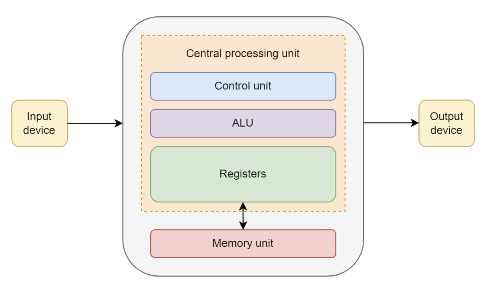
Diagram of von Neumann architecture, from https://onlinelibrary.wiley.com/doi/book/10.1002/9780470932025
The Harvard architecture is a variant of the von Neumann design in which instruction and data storage are physically separated.
This allows simultaneous access to both instructions and data, partially overcoming the von Neumann bottleneck.
Most modern central processing units (CPUs) use a modified Harvard architecture, in which instructions and data have separate caches but share the same main memory.
This hybrid approach combines some of the performance benefits of Harvard with the flexibility of von Neumann.
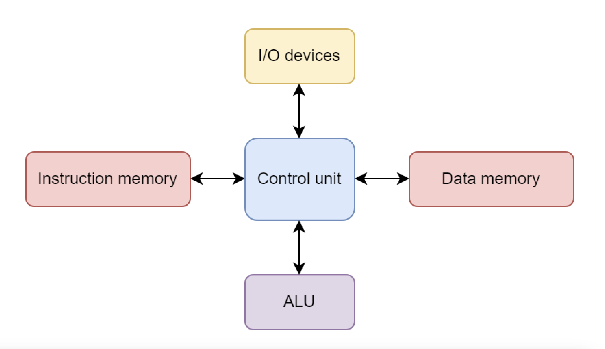
Diagram of Harvard architecture, from https://onlinelibrary.wiley.com/doi/book/10.1002/9780470932025
Performance
Three main components have the greatest impact on computational performance:
-
CPU: CPU performance is often quantified by frequency, or “clock speed,” which determines how quickly a CPU executes instructions in terms of cycles per second. For example, a CPU with a clock speed of 3.5 GHz performs 3.5 billion cycles each second. Many CPUs have multiple cores, enabling parallel execution of multiple instructions simultaneously (Intel).
-
RAM: Random access memory (RAM) is a computer’s short-term memory, storing the data needed to run applications and open files. Faster RAM allows data to move to and from the CPU more quickly, and larger RAM capacity enables the CPU to handle more complex operations simultaneously (Intel).
-
Hard drive: In contrast to RAM, a computer’s hard drive is used for long-term data storage. Hard drives are characterized by both their capacity and performance. Higher-capacity drives can store more data, while higher-performance drives can read and write data faster. Hard disk drives (HDDs) generally offer more capacity for a lower cost, whereas solid state drives (SSDs) provide better performance and reliability.
Processing astronomical data, building models, and running simulations requires significant computational power.
The laptop or PC you are using right now likely has between 8 GB and 32 GB of RAM, a processor with 4–10 cores, and a hard drive that can store 256 GB–1 TB of data.
But what if you need to process a dataset larger than 1 TB, or load a model into RAM that exceeds 32 GB, or run a simulation that would take a month to complete on your CPU?
In that case, you need a bigger computer, or many computers working in parallel.
Flynn’s Taxonomy: A Framework for Parallel Computing
When discussing parallel computing, it is helpful to have a framework for classifying different types of computer architectures.
The most widely used is Flynn’s Taxonomy, proposed in 1966 (Flynn, 1966).
It provides a simple vocabulary for describing how computers handle tasks and will help us understand why certain programming models are better suited to certain problems.
Flynn’s taxonomy is based on four terms:
- Single
- Instruction
- Multiple
- Data
These combine to define four main architectures (HiPowered book):
- SISD (Single Instruction, Single Data): A traditional serial computer, also called a von Neumann machine. It executes one instruction at a time on a single piece of data. A laptop running a simple, non-parallel program is operating in SISD mode.
- SIMD (Single Instruction, Multiple Data): A parallel architecture in which multiple processors execute the same instruction simultaneously, but each works on a different piece of data. This approach enables massive data parallelism.
- MISD (Multiple Instruction, Single Data): Each processor executes a different instruction on the same piece of data. This architecture is very uncommon.
- MIMD (Multiple Instruction, Multiple Data): The most common type of parallel computer today. Multiple processors execute different instructions on different data at the same time. Multi-core processors, like the one sitting in your PC, and computing clusters fall into this category.
In addition to these categories, parallel computers can also be organized by memory model:
- Multiprocessors: Shared-memory systems in which all processors access a single, unified memory space. Communication between processors occurs via this shared memory, which can simplify programming but may lead to data access errors if many processors try to use the same data simultaneously. Cores within the same processor in a personal PC use this memory system.
- Multicomputers: Distributed-memory systems in which each processor has its own private memory. Processors communicate by passing messages over a network, which avoids memory contention but requires explicit communication management in software. This is how memory is handled in clusters.
SIMD in Practice: GPUs
A key modern example of SIMD architecture is the GPU (Graphics Processing Unit).
GPUs were originally designed for computer graphics—an inherently parallel task (e.g., calculating the color of millions of pixels at once). Researchers soon realized this massive parallelism could also be applied to general-purpose scientific computing, such as physics simulations and training AI models, leading to the term GPGPU (General-Purpose GPU). These architectures offer significant speedups for data-parallel workloads. The trade-off is that GPUs have a different memory hierarchy than CPUs, with less cache per core, so performance can be limited for algorithms that require frequent or irregular communication between threads.
A CPU consists of a small number of powerful cores optimized for complex, sequential tasks. A GPU, in contrast, contains thousands of simpler cores optimized for high-throughput, data-parallel problems. For this reason, nearly all modern supercomputers are hybrid systems that combine CPUs and GPUs, leveraging the strengths of each.
Supercomputers vs. Computing Clusters
In the early days of HPC, a “supercomputer” was typically a single, monolithic machine with custom vector processors.
Today, the vast majority of systems are clusters.
- Cluster: A collection of many individual computers, so-called nodes, connected by a high-bandwidth network. Early clusters were built from single-core SISD machines, but modern nodes are almost always MIMD systems.
- Node: A single computer within the cluster. It has its own processors (CPUs), memory (RAM), and often accelerators (GPUs). A typical compute node in a current cluster might have two CPUs with multiple cores each. ??????
- Workload Manager (Scheduler): Software that manages the entire cluster, such as SLURM or PBS. It allocates resources, handles the job queue, and decides when and where jobs run. When you submit a job, the scheduler reserves a set of nodes for a specific time.
Network Topology for Clusters
Since a cluster is a collection of nodes, the characteristics of the connections between them, namely, the bandwidth and the network topology, is critical to performance.
If a program requires frequent communication between nodes, a slow or inefficient network will cause major bottlenecks.
Common HPC topologies include:
-
Mesh: Nodes are arranged in a two- or three-dimensional grid, with each node connected to its nearest neighbors. Figure 1 shows examples of a 2D mesh, a 3D mesh, and a 2D torus (where the edges wrap around to connect boundaries, forming a torus).
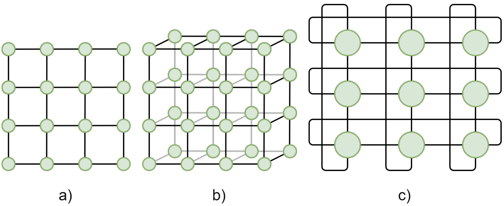
Figure 1: 2D and 3D meshes: a) 2D mesh, b) 3D mesh, c) 2D torus.
-
Fat Tree: A hierarchical tree structure with “fatter” (higher-bandwidth) links closer to the root to prevent congestion when many nodes communicate at once (Figure 2).
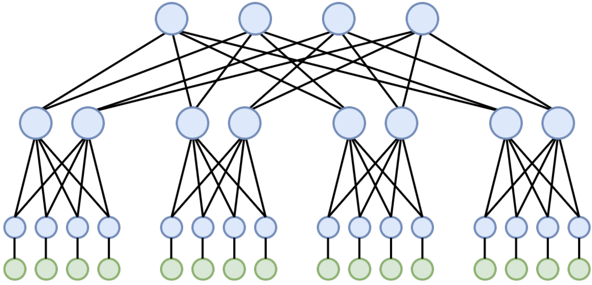
Figure 2: Fat tree topology.
Less common HPC topologies include bus, ring, star, hypercube, fully connected, crossbar, and multistage interconnection networks.
Never Run Computations on the Login Node!
When you connect to an HPC cluster, you land on a login node. This shared resource is for compiling code ??????, managing files, and submitting jobs to the workload manager, but not for heavy computation.
Running an intensive program on the login node will slow it down for everyone, and is a classic mistake for new users.
Submit your job through the workload manager (e.g.,sbatchin SLURM) so it runs on compute nodes.
File System
HPC clusters typically provide multiple storage locations, each serving different purposes:
- Home directories: Personal storage for each user, usually with limited capacity. Suitable for scripts, configuration files, and small datasets.
- Scratch: Temporary high-capacity storage for active jobs. Not backed up and typically cleared after job completion. Ideal for:
- Jobs requiring large storage during execution
- Datasets too large for personal storage but not needed permanently
- Jobs needing higher-performance storage than personal directories
- Shared: Storage accessible to multiple users, often for research groups. Commonly used as a shared working directory and generally backed up regularly.
Other types of storage
Large HPC facilities may have more complex storage organization. For example, there may exist project and archive storages, dedicated to storing large volumes of data that are not accessed often and can tolerate large lags of access time. One of the slowest, but also cheapest and most reliable storage types are magnetic tape libraries. They are commonly used for storing archival (processed with obsolete versions of pipelines) data releases of astronomical surveys, and this system is likely to be implemented for LSST as well. Some HPC systems also have an archive tier that is really slow—think tape libraries—intended for “stick it in a vault, retrieve once every six months” kind of usage
????? \cite{https://www.hpc.iastate.edu/guides/nova/storage#:~:text=Home%20directories%20(/home),used%20for%20high%20volume%20access.}) \cite{https://services.dartmouth.edu/TDClient/1806/Portal/KB/ArticleDet?ID=140938}
Which computer for which task?
- If you have an algorithm that requires the output from step A to start step B… (sequential code)
- If you have an algorithm that performs the same operation on a large volume of homogeneous data… (parallelizable code)
- If you have an algorithm that operates on vectors or matrices… (vectorization)
Key Points
Keypoint 1
LSST HPC facilities and opportunities
Overview
Teaching: 10 min
Exercises: 0 minQuestions
Question 1
Objectives
Objective 1
In astronomical community, we usually have local HPC facilities, most commonly institutional clusters. Depending on the project you are part of, you can also have access to the funds for cloud-based HPC solutions, e.g. provided by Google or AWS. However, LSST community also has in-house computational facilities that may be used for HPC purposes.
LSST In-Kind program is created to account for the non-monetary international contributions to the developemnt and operations of LSST. The idea behind this program is that each participating country has a commitment to contribute certain amount of research and/or software development efforts, observation hours of different observatories, or computational and data storage resources, in exchange for the data rights for the LSST Data Releases for a fixed number of researchers from that country. Among the in-kind contributing teams there are thirteen computational and data storage facilities. Most of them are considered to be Independent Data Access Centers (IDACs), whose main purpose is to store and provide access to the LSST data products - therefore, they do not always have significant amount of CPUs or GPUs aboard.
LSST IDACs with HPC capabilities
UK IDAC
Australia IDAC
Brazil IDAC
Croatia IDAC
Poland IDAC
Key Points
Keypoint 1
Bura access
Overview
Teaching: 20 min
Exercises: 5 minQuestions
How to access the Bura High Performance Computing Cluster
Objectives
Log onto the Bura cluster
Gain familiarity with Bura’s computing resources and capabilities
Intro
Bura is a supercomputer at the Center for Advanced Computing and Modelling (CNRM), University of Rijeka, Croatia. Access to this cluster is available to the Rubin Data Rights community through the LSST International In Kind Program. The goal of this episode is to describe Bura’s architecture and capabilities, and outline the procedure necessary to access the cluster. More detailed information on Bura, including tutorials, can be found here.
The Bura Supercomputer
Bura has a hybrid architecture consisting of three components:
-
Cluster: The system consists of 288 compute nodes, each of which consists of two Xeon E5 processors (with 24 physical cores and 48 threads per node). This gives a total of 6912 processor cores which can support up to 13824 threads. Each node has 64 GB of memory and 320 GB of Solid State Drive (SSD) disk space . In total, the nodes have 18 TB of memory and 95 TB of disk space.
-
GPGPU (General-purpose computing on Graphical Processing Units): This component consists of four nodes, two comprising Xeon E5 processors (each with 8 cores/node) and two based on NVIDIA Tesla K40 general purpose GPUs. 64 GB of RAM is available, with 320 GB of SSD disk space.
-
SMP (Symmetric Multiprocessing): The third component is a multiprocessor system with a large amount of shared memory. The SMP component consists of 16 Xeon E7-8867 processors giving a total of 256 physical cores per node. These have 6 TB of memory and 245 TB of local storage. Two SMP nodes are available.
In addition to the computing nodes, Bura provides some large data storage areas, both of which are accessible from all three components. The first is a 13 TB /home area, and the second is an 868 TB /scatch space. The latter is supported by a Lustre Infiniband parallel distributed filesystem.
Computing on Bura
Bura is designed to provide a multi-user, powerful general-purpose computing environment that can be used for a wide range of applications.
It uses the LMOD system to dynamically manage user environmental modules. This is used to manage user environment variables as well as software dependencies such as Python versions.
Users can run computing tasks on Bura by submitted jobs to its SLURM workload manager. SLURM is an open-source task management system that manages the available computing resources and dynamically schedules the computing tasks submitted by multiple users.
We will cover how to configure and run tasks on Bura in subsequent episodes. Firstly, we need to log into the system.
Accessing Bura
There are two ways to access Bura:
- Using a Virtual Private Network (VPN)
- Through Bura’s web-based portal.
Access through the web browser
You can access Bura simply by opening a new window or tab in your browser and typing Bura’s URL into the address bar:
You should then see the login screen below, where you can enter your user credentials, and click the green “Login” button.
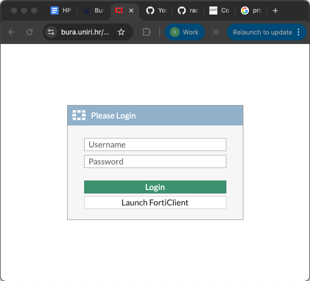
When you have logged in successfully, you will see the following screen:
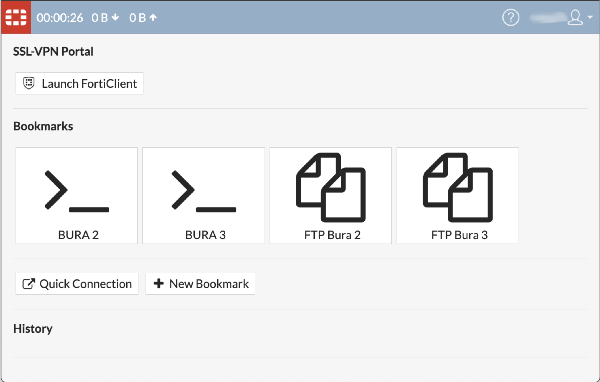
Please note that there are a few known issues with this method of accessing Bura.
- Some shortcuts don’t work due to the web browser,
- Some lines may be missing. If so, try pressing CTRL-C, and resize the window.
The landing screen offers two options, and you can use either of the Bura2 or Bura3 ports.
FTP File transfer
You can transfer files to Bura’s storage areas by clicking on either of the FTP buttons. This will take you to the file system navigator screen, where you can access or add files to your user account’s storage area on Bura.
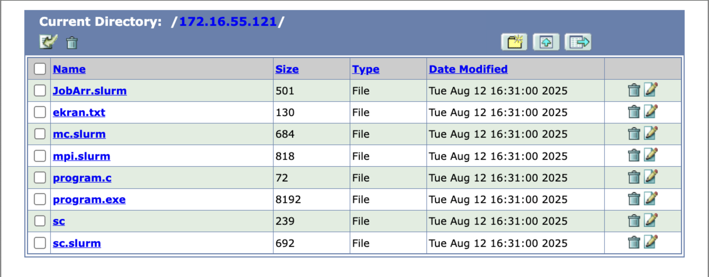
Starting a terminal session
From the landing page, you can click either of the buttons marked “>_” to start a terminal session which will take you to a Unix-like command prompt.
From here you can start your computing jobs. We will cover how to do that in upcoming episodes.
VPN Access
Alternatively, you can access Bura independently of the web portal by setting up a VPN connection. This requires you to install VPN client software on the machine that you will connect from.
The preferred VPN client is Forticlient, which supports all major operating systems:
- Windows XP, 7, Vista and 10
- Linux Debian, Ubuntu, Centos, Fedora, Redhat and more
- Android
- iOS
- Chromebook
Click here to install Forticlient
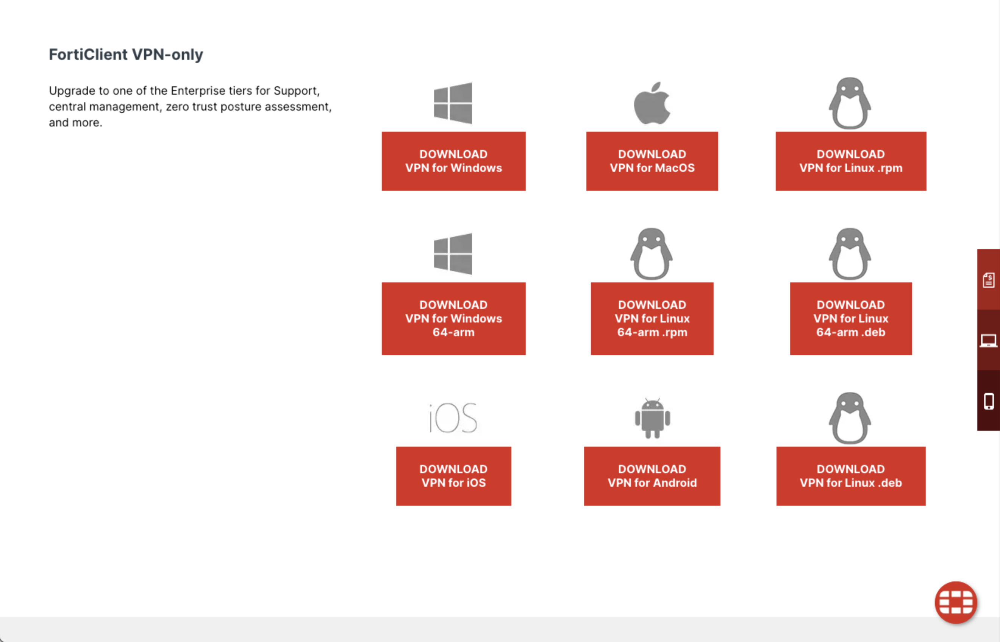
Once you have install Forticlient, open the app and use the GUI to add a new connection configuration. The details needed for this configuration were emailed to all workshop participants in advance.
Once the VPN is configured and saved, click the “Connect” slider to open the VPN connection.
Note that it is inadvisable to have multiple VPNs running at the same time, so if the connection is problematic, check to make sure you do not have a different VPN running in the background.
SSH Client
Once you have a secure VPN connection open, it is analogous to creating a secure, private tunnel from your machine to Bura. Traffic, i.e. your commands, can then be sent securely to Bura using the Secure Shell protocol, or SSH.
There are a number of SSH client software packages available for different platforms.
Here we list just a few, but you are welcome to use your preferred client:
- PuTTY (also SuperPutty, PuTTY Tray, KiTTY)
- Bitvise
- MobaXterm (free and pro versions available)
- SmarTTY (free)
- Dameware SSH Client (free and paid versions available)
- mRemoteNG (free)
- Terminals (free)
Whichever client you choose, you should configure the ‘host’ parameter to the IP address of either one of the two Bura login nodes (these were sent to workshop participants by email).
Once you log in with your SSH client you should reach a terminal session and the Bura commandline prompt.
Exercise
Securely log into the Bura cluster through either one of the options described above. Open a terminal session and use the commandline tools described in the previous exercise to list the contents of your home directory and create a new file.
Solution
$ ls -bash-4.2$ ls ekran.txt JobArr.slurm mc.slurm mpi.slurm program.c program.exe sc sc.slurm $ nano (Click CTRL-X to exit and save the file with a filename of your choice.)
Key Points
Bura is a powerful supercomputer with CPU, GPGPU and SMP components
Bura can be accessed via a portal through a web-browser, or by installing VPN software and an SSH client
Command line basics
Overview
Teaching: 45 min
Exercises: 15 minQuestions
How can I change directories from the command line?
How can I create directories and files from the command line?
How can I view my identity?
How can I create and move files?
How can I who is doing what on a computer or HPC?
How can I print to the shell?
Objectives
Learn essential shell commands used in data management and processing on a High Performance Computing Environment
Introducing the Shell
The shell or command line is a way to interact with a computer by typing text commands into a terminal or console window. This is in contrast to using a graphical user interface (GUI) with buttons and menus. Although many of the same tasks can be performed with both a shell interface or a GUI interface, the shell gives the most basic and universal access because it does not require any graphics. Whether you’re navigating a High Performance Computing (HPC) repo, inspecting files, or debugging processing failures, these shell commands will be indispensable.
You have already opened a shell to ssh into bura. Now that your shell is pointing to the bura file system, we will learn how to navigate it, manipulate files, and interrogate the machine for information about you, the file system, and the tasks it is running.
File Navigation
When you view your file system via a graphical interface, you are used to clicking on one folder to look inside and then clicking on another folder inside that one. This folder (or directory) structure is called a directory tree. In the same way that you can click to navigate around your file system, you can type commands into the shell.
What directory am I in?
The pwd command stands for “print working directory”. You can always use this command to ask the shell “where am I?” (you will be surprised how often this comes up).
$ pwd
> edu02
What is in my directory?
The ls command is short for listing - this lists all of the files and directories in the directory that you are currently in. This is really helpful if you are looking for something or can’t remember the name of a file or directory.
$ ls
> ekran.txt mc.slurm program.c sc
> JobArr.slurm mpi.slurm program.exe sc.slurm
By default, ls does not show you any directories or files starting with .. These are called hidden files and directories. If you want to see everything, even the hidden files, you can use the -a flag (for all).
$ ls -a
> . .bash_history JobArr.slurm mpi.slurm program.exe sc.slurm
> .. ekran.txt mc.slurm program.c sc
Another useful option is -F flag - this adds symbols to the output to identify different types of entries. For example it will put a / after directories.
Using Multiple Flags
Sometimes you want to use more than one flag for a command (for example maybe you want to use the
-aand-Fflags) to show all hidden files and tell you which ones are directories. If the flag is a single letter then you can string them together likels -aFor if you prefer you can writels -a -F. The order you put the flags in doesn’t matter.
Creating a Directory
When you start a project one of the first things you want to do is set up directories to organize it. For example, you may want a top level directory for the project and then sub-directories for data and code. When you log onto another computer you should not put everything in your home directory. A little organization at the beginning can save you a lot of time later when you try to figure out which files belong to what project. You can create a new directory using the mkdir command (for make directory). Let’s make a directory for the work we do in this course:
$ mkdir hpc_course
Spaces in directory names
You may have noticed that we separate different parts of a command with spaces. The command line uses spaces to parse each part of the command. For this reason, you should not create directories with spaces in them, because if you then try to do something with them from the command line you need to add special characters to group the multiple words together. It is common to use underscores or dashes between words.
Changing Directories
Creating a directory does not move you into the new directory. To change directories you use the cd command. For example:
$ cd hpc_course
To move backwards (or up) a directory (for example to move back to your home directory) use cd ../
Exercise
Move into your
hpc_coursedirectory. Verify that you are in the correct directory, then create two new directories: code and data. Verify that your directories have been created.Solution
```bash cd hpc_course pwd mkdir code mkdir data ls ```
Using tab to auto-complete
It can be tiring to type out the name of every file and every directory and it can also be frustrating when you mistype a word. The shell will auto-complete a filename or directory name if you have typed enough of the word to uniquely define it by pressing the tab button. If there is more than one possibility, press the tab button twice to display the different options.
Going backwards
Once you have gone into a directory, how do you get out? ../ is the shells way of saying “go back a directory”. For example, we are currently in the hpc_course directory. If you type cd ../ you will be in your home directory.
$ pwd
$ cd ../
$ pwd
$ ls
$ cd hpc_course
File Manipulation
Let’s create a simple script that prints “hello world” to the screen. We will use the editor nano. The great thing about nano is that it tells you how to save and exit in the screen, it is also ideal for ssh as it opens directly in the shell window you are using.
$ nano shell_example.sh
In the window that pops up, let’s type echo "hello world. Then press control-o to save (Write out) and control-x to exit.
Oops - we just create that script in our top level directory and it belongs in our code directory (because it is a piece of code). We can move the file to the code directory with the mv command. The format is mv thing-you-want-to-move where-you-want-to-move-it
$ mv shell_example.sh code
mv can also be used to rename a file, you can think of this as moving it from one file name to another filename. In this case where-you-want-to-move-it is the new name of the file. Let’s rename the file to something more descriptive hello_world.sh. Don’t forget we moved the file to our code directory, so we have to go there first before we can rename it.
$ ls
$ cd code
$ ls
$ mv shell_example.sh hello_world.sh
Instead of moving or renaming a file, you can create a copy of the file with the cp command. The format is the same as mv
$ cp hello_world.sh hello_world_copy.sh
including paths in cp and mv
You do not always have to be in a directory to copy or move a file. If the file you want to move is not in your current directory, you can refer to the file you want to move with both the path from your current directory and the filename. Similarly, where you want to move a file can also include a path. Let’s say I was in my
hpc_coursedirectory and I want to copy my hello_world.sh file to hello_world_3.sh. The format looks like this:$ pwd $ cd ../ $ cp code/hello_world.sh code/hello_world_3.sh
deleting files
You may accidentally create file and want to delete it. This can be done with the rm command which stands for remove. Be careful, the rm command permantly deletes a file - this is not like putting it in the trash can or recycle bin where you can recover it. For that reason, we recommend you use the -i flag which double checks with you before it deletes a file. Now we can remove our hello_world_3.sh file.
$ cd code
$ rm -i hello_world_3.sh
Exercise
Use nano to edit your hello_world_copy.sh file to print something else. Rename your file to something descriptive of what it prints.
Solution
```bash nano hello_world_copy.sh ``` change "hello world" to "training script" Save and exit ``` ```bash mv hello_world_copy.sh training.sh
File permissions - who owns what?
Different files on different systems belong to different people and you don’t want anyone to be able to do anything to any file. File permissions restrict access to files and directories based on an individual or a defined group. This is like having a locked office door. There are 3 types of permissions: read (r), write (w), and execute (x). Reading a file allows you to look at the file (or directory) but not modify it. Write permissions allow you to modify the file (or directory). Execute allows you to execute a script. There are also 3 sets of permissions to set: permissions for the owner of the file, permissions for the group that the file belongs to, and permissions for everyone else. Let us take a look at the permissions of the files in our directory. To view the current permissions you can type:
$ ls -l
> TODO
The output has the following format <type><permissions> <link> <owner> <group> <size> <date modified> <name>. The first character is the type - we will skip this and go directly to the 9 characters after that. The first three are the permissions for the owner. They will always be listed in the order read, write, and execute. If the letter is there than that permission is enabled. For instance if the first three charcters were rw- then the owner would have permission to read and write a file or directory but not permission to execute it. The next three characters are the groups permissions. Anyone who belongs to the group listed in the fourth column is assigned these permissions. The permissions work the same way as the owner’s permissions. For instance, if the middle three characters are r-x then anyone in the group has permission to view the file and to execute it, but not to modify it. Finally, the last three charcters are for everyone else.
What groups do I belong to?
To figure out what groups you are part of (which can be useful to understand if you have permission to do something) you can type
$ groups
You modify the permissions on a file or directory using the chmod command. You pass to this command whose permissions you want to modify, owner (o), group (g), everyone else (o), or all users (a), what permission you want to modify (r, w, or x) and whether you want to add (+) that permission or remove (-) it. For example, to give everyone else the ability to execute our hello_world.sh script we would type:
$ ls -l hello_world.sh
$ chmod o+x hello_world.sh
$ ls -l hello_world.sh
Exercise
What are the permissions on the training.sh? Who owns the file? What group does it belong to? Modify the permissions to remove the groups ability to read the file. Double check that the permissions changed. Then add the permissions back.
Solution
```bash $ chmod g-r training.sh $ ls -l $ chmod g+r training.sh ```
Understanding what is happening on the whole system
Later in this lesson you will learn how to monitor specific tasks that you run on the HPC. Sometimes you want information about the file system or what processes are running outside of the HPC task manager.
When you are working on an HPC you are using a shared resource. It can be helpful to know how much of that resource you are using. You can do this with the du -h <directory> command. The -h makes the output format human readable (e.g. the size is in Kb, Mb, Gb). First, we will look at the size of our home directory.
$ du -h /home/edu02
> 40K /home/edu02
Interrupting a command
Help! you forgot to add a directory and now it is printing the size of every file.
ctl+cwill interrupt the command and return your cursor and command line.
Another really useful command is seeing what processes are running and who is running them. You can do with the top command. The important parts of the output are the PID (process id), USER (who is running the process), %CPU (what percentage of the CPU is being used by that process), %MEM (what percentage of the memory is being used by that process), TIME (how long has the process been running), and COMMAND (what is the command that was run). If you are worried something you did is taking too long or the computer is running slower than you expect, running top is a really good way to get an overview of who is doing what on the system. Note that this will continue to run until you tell it to stop. Type q to exit.
Getting files to and from the HPC
HPCs are a great resouce for computing - but they are not a long term storage solution. You will want to move the files from the HPC to a file system that you control. You may also want to prototype a script locally and then move it to the HPC and run it. There are three ways you can move files back and forth: scp, rsync, and using GitHub (or other version control).
scp stands for secure copy. The command format is scp <what you want to copy> <where to put it> and these paths are always specified from where you are. Because you will be going from one system to another - one of the locations will include both the address to the system and the path, separated by a colon. For this part, we will exit Bura. You can do that by typing exit.
Now we will use scp to copy our hello_world.sh script to our local directory (.). After executing the scp command you will be asked for your password. Use your ssh password.
$ scp edu02@172.16.55.121:/home/edu02/hpc_course/hello_world.sh .
> edu02@172.16.55.121's password:
> hello_world.sh 100% 130 0.1KB/s 00:01
Another option for moving files is rsync. This actually checks that the file or directory has been updated and only moves new things. The format is the same as scp: rsync <what you want to copy> <where to put it>.
Finally, if you are using version control to track your development and have a remote server (e.g. GitHub, Bitbucket). Then you can use this to create another copy of your repository on the HPC and transfer files via the remote server.
Exercise
Use
scporrsyncto move the files you downloaded for this course to Bura.Solution
~~~
$ TODO~~~[
{: .challenge}]()
Printing to the screen
Sometime you want to write a message to the screen. This can be done with the echo command with the fomat echo <thing to print>. For example, to print “hello world”:
$ echo "hello world"
> hello world
Key Points
Shell skills enable efficient navigation and manipulation local and remote file systems
The shell can be used to identify who you are and what you have access to
The shell can be used to determine what is happening on a system and how you are using the system
Bura Setup
Overview
Teaching: 30 min
Exercises: 15 minQuestions
How do I find and use software on a shared supercomputer?
Why can’t I just use
sudo apt-get installlike on my own machine?How do I manage different versions of the same software?
How can I install Python packages for my project without affecting other users?
Objectives
Understand the purpose of environment modules.
Use
modulecommands to find, load, and manage software.Understand the need for Python virtual environments.
Create and activate a Python virtual environment.
Install project-specific packages using
pipand arequirements.txtfile.
After learning the basic commands for navigating the filesystem, it’s time to learn how to actually use the software on a supercomputer like Bura. On your personal computer, you might use a package manager like apt, yum, or Homebrew, often with administrator (sudo) privileges. On a shared system used by hundreds of people, this isn’t possible. Instead, we use a system called environment modules.
What are Environment Modules?
Think of the cluster as a massive workshop with every tool imaginable stored in cabinets. To work on your project, you don’t bring all the tools to your bench at once. You just get the specific ones you need, like a particular screwdriver or a specific wrench.
Environment modules work the same way. They let you “load” and “unload” specific software packages and versions into your current terminal session, setting up the necessary paths and variables so you can use them.
Finding Available Software
To see the list of all available software “cabinets,” you can use the module avail command. This will show you all the modules you can load. The list can be very long!
Compactifying the Process
The output of
module availcan be overwhelming. You can pipe the output tolessto scroll through it (module avail | less) or togrepto search for something specific (module avail | grep python).
$ module avail
A shorter alias for module avail is ml av, which you might find more convenient.
$ ml av
This still gives a very long list. A more targeted way to find software is with module spider. This command helps you search for a specific package. Let’s say we want to find what versions of the Python programming language are available.
$ module spider python
--------------------------------------------------------------------------------------------------------------------------------------------------------------------------------------------------------------------------
python:
--------------------------------------------------------------------------------------------------------------------------------------------------------------------------------------------------------------------------
Versions:
python/2.7.18
python/3.8.12
python/3.9.7
python/3.10.5
...
--------------------------------------------------------------------------------------------------------------------------------------------------------------------------------------------------------------------------
To find other possible module matches, use "module -r spider '.*python.*'"
To learn more about a specific module, use "module spider mod-name"
--------------------------------------------------------------------------------------------------------------------------------------------------------------------------------------------------------------------------
module spider shows us all the modules with “python” in their name and the versions available for each.
Loading and Managing Modules
Now that we’ve found the software we want, we need to “load” it into our environment. Let’s load Python version 3.10.5. The command for this is module load.
$ module load python/Python-3.10.5
How can we be sure the module is loaded? We can use module list to see all the currently active modules in our session.
$ module list
Currently Loaded Modulefiles:
1) python/Python-3.10.5
If you want to unload a module, you can use the command module unload
$ module unload python/Python-3.10.5
If you want to start fresh and unload all your currently loaded modules, you can use module purge.
$ module purge
$ module list
No Modulefiles Currently Loaded.
Note
When you load a module, it’s only for your current login session. If you log out of Bura and log back in later, your modules will be gone. You will need to module load them again for your new session.
Python Virtual Environments
We’ve loaded a system-wide version of Python. Great! But what if your project needs a specific version of a package like numpy, and another one of your projects needs a different version? If you install them globally, you’ll have conflicts.
To solve this, we use virtual environments. A virtual environment is a self-contained directory that holds a specific Python interpreter and all the packages you install for a particular project. It’s like giving your project its own private toolbox.
Creating a Virtual Environment Let’s create a virtual environment for our workshop project. First, make sure you have the Python module loaded, as the virtual environment will be based on it.
$ module load python/Python-3.10.5
Now, we can create the environment using Python’s built-in venv module. Let’s call our environment hpc_workshop_env.
$ python -m venv hpc_workshop_env
If you now use ls, you will see a new directory has been created.
$ ls
hpc_workshop_env
Activating and Deactivating the Environment
Just creating the environment isn’t enough; you have to activate it. Activating the environment modifies your shell’s prompt to let you know it’s active and points it to the Python and pip executables inside that specific environment.
$ source hpc_workshop_env/bin/activate
You’ll know it worked because your command prompt will change to show the environment’s name.
(hpc_workshop_env) $
Now, any Python packages you install will go into the hpc_workshop_env directory, leaving the system’s Python installation clean.
To exit the environment, simply use the deactivate command.
(hpc_workshop_env) $ deactivate
$
Exercise: Parallelization Challenge
Use the following steps to practice basic HPC environment and Python virtual environment commands.
Challenge
- Use
module spiderto find the available versions ofcmake.- Create a directory for a new project called
my_test_project.- Move into that directory.
- Create and activate a Python virtual environment inside it named
test_env.- Deactivate the environment.
Solution
$ module spider cmake $ mkdir my_test_project $ cd my_test_project $ python -m venv test_env $ source test_env/bin/activate (test_env) $ deactivate
Installing Project Packages with pip
Most Python projects depend on a set of external libraries. The standard way to manage these is with a requirements.txt file and Python’s package installer, pip.
First, let’s create the requirements file. Make sure you are in your project directory (e.g., hpc_workshop_env is visible when you type ls). Use nano to create a file named requirements.txt.
$ nano requirements.txt
Now, copy and paste the following list of packages into the nano editor by pressing Shift + Insert.
contourpy==1.3.2
cycler==0.12.1
fonttools==4.59.0
kiwisolver==1.4.9
llvmlite==0.44.0
matplotlib==3.10.5
mpi4py==4.1.0
numba==0.61.2
numpy==2.2.6
packaging==25.0
pillow==11.3.0
pyparsing==3.2.3
python-dateutil==2.9.0.post0
six==1.17.0
Save the file and exit nano (press Ctrl+X, then Y, then Enter).
Now, to install these packages, first activate your virtual environment.
$ source hpc_workshop_env/bin/activate
With the environment active, you can now use pip to install everything listed in your requirements file. The -r flag tells pip to read from a file.
(hpc_workshop_env) $ pip install -r requirements.txt
pip will connect to the internet, download all the specified packages and their dependencies, and install them into your hpc_workshop_env. You are now ready to move on to the next section. This setup ensures that your work is self-contained and reproducible.
Key Points
HPC systems use environment modules to manage shared software.
Use
module availandmodule spiderto find software.Use
module loadto add software to your environment andmodule purgeto remove it.Loaded modules are temporary and reset when you log out.
Python virtual environments (
venv) isolate your project’s dependencies.Always activate a virtual environment before installing packages with
pip.
Introduction to Slurm workload manager
Overview
Teaching: 50 min
Exercises: 15 minQuestions
What is Slurm?
How do I run computing tasks using Slurm?
Objectives
Understand the role and purpose of Slurm
Understand how to create and run a computing task using Slurm
Intro
Slurm is an open source, fault-tolerant, and highly scalable cluster management and job scheduling system for large and small Linux clusters. Slurm requires no kernel modifications for its operation and is relatively self-contained. As a cluster workload manager, Slurm has three key functions. First, it allocates exclusive and/or non-exclusive access to resources (compute nodes) to users for some duration of time so they can perform work. Second, it provides a framework for starting, executing, and monitoring work (normally a parallel job) on the set of allocated nodes. Finally, it arbitrates contention for resources by managing a queue of pending work.
MPI (Message Passing Interface)
In order to execute a set of software instructions simultaneously on multiple computing
nodes in parallel, we need to have a way of sending those instructions to the nodes.
There are standard libraries available for this purpose that use a standardized syntax and
are designed for use on parallel computing architectures like Bura. This is known as a
Message Passing Interface or MPI.
We will go into this topic in more detail later on, but for now it suffices to know that there are different “flavors” of MPI available, and how you use each one depends on which type of MPI you are using.
There are three fundamentally different modes of operation used by these various MPI implementations. Here is how they interact with the Slurm system:
- Slurm directly launches the tasks and performs initialization of communications through the PMI2 or PMIx APIs. (Supported by most modern MPI implementations.)
- Slurm creates a resource allocation for the job and then mpirun launches tasks using Slurm’s infrastructure (older versions of OpenMPI).
- Slurm creates a resource allocation for the job and then mpirun launches tasks using some mechanism other than Slurm, such as SSH or RSH. These tasks are initiated outside of Slurm’s monitoring or control.
Architecture
Slurm is a system used to manage and organize work on a cluster — a group of computers working together to perform complex tasks.
At the core of Slurm is a central manager, called slurmctld, which keeps track of available resources (like CPUs and memory) and assigns jobs to the appropriate computers. There can also be a backup manager that takes over if the main one fails.

Each computer in the cluster (called a node) runs a program called slurmd. This acts like a remote assistant: it waits for tasks, runs them, sends back results, and then waits for more.
To keep a record of all activity, an optional component called slurmdbd can be used. It stores accounting information — such as who used what resources and when — in a shared database.
Another optional component, slurmrestd, allows users and applications to communicate with Slurm over the web using a REST API.
Users can interact with Slurm from the terminal commandline using several simple commands.
Here are some of the most important ones:
-
srun: starts a job, -
scancel: cancels a running or queued job, -
sinfo: shows the current status of the system, -
squeue: displays information about jobs currently running or waiting, -
sacct: provides detailed reports on finished jobs.
There’s also a graphical interface called sview that visually shows system and job status, including how the nodes are connected.
Administrators can use tools like:
-
scontrol: to monitor or modify how the system is working, -
sacctmgr: to manage users, projects, and resource allocations.
Finally, for developers, Slurm also offers APIs that allow software to interact with the system automatically.
Slurm Commands
Let’s see some of these commands in action. For reference you can find more details about these commands and their options in the SLURM Quick Start Summary (PDF). From the commandline you can also type:
$ man <name of command>
to get more information on all Slurm daemons, commands, and API functions.
The command option –help also provides a brief summary of options. Note that the command options are all case sensitive.
1. View Available Resources
Before we begin a computing task, it is helpful to review what computing resources are
available. The sinfo command reports the state of partitions and nodes managed by Slurm.
# Display the status of partitions (queues) and nodes
sinfo
Expected Output:
PARTITION AVAIL TIMELIMIT NODES STATE NODELIST
debug up infinite 2 idle node[01-02]
batch up infinite 4 idle node[03-06]
2. Submit a Job Script
Now let’s send a computing task to the Slurm for execution on Bura.
First, create a script file named job.sh. This script provides the Slurm controller with all the information needed to execute the task, including any input data, what commands to execute and where to store any output. The script also controls the number of instances of the job to be run in parallel.
#!/bin/bash
#SBATCH --job-name=test_job # Name of the job
#SBATCH --output=output.txt # Save output to this file
#SBATCH --time=00:01:00 # Set max execution time (HH:MM:SS)
#SBATCH --ntasks=1 # Number of tasks to run
hostname # Command to execute
We can then submit this job to the Slurm system. Slurm provides a number of ways of doing this.
srun is used to submit a job (an instance of a task) for execution.
$ srun <program>
This command has a wide variety of options to specify resource requirements, which can be configured using optional flags appended to the srun command. Here are a few example of useful flags - see the SLURM Quick Start Summary for a more comprehensive list.
To begin a job at a specific time, e.g. 18:00:00
srun --begin=18:00:00 <program>
To require that a specific number of CPUs be allocated to the task:
srun --cpus-per-task=<Ncpus> <program>
To control the number of instances of the task to be executed:
srun -n<Ntasks> <program>
To assign a maximum time limit after which the job instance should be halted (measured in wall-clock time):
srun --time=<time> <program>
It’s often more convenient to design a job script which can be parallelized over multiple
processes if desired, and submit it for later execution. The sbatch command exists
for this purpose:
sbatch job.sh
Submitted batch job 1234
3. Check the Queue
Having submitted a job, it is very helpful to be able to monitor the status of it. We can do
that using the squeue command - this will show us the status of both running and pending jobs.
squeue
Expected Output:
JOBID PARTITION NAME USER ST TIME NODES NODELIST(REASON)
1234 batch test_job alice R 0:01 1 node03
4. Cancel a Job
But what do we do if we realise there is a problem with our job after we have submitted it?
We can use the scancel command to cancel a job process. To do so we first need the
jobid assigned to the job once it was submitted. You can find this number from the output
of the squeue command.
E.g., to cancel the job with ID 1234:
scancel 1234
Expected Output:
# No output if successful
5. View Job History
Another useful option is to review a listing of all previous jobs submitted, including those that have been completed (and therefore no longer appear in the output of squeue).
# Show accounting info about completed jobs
sacct
Expected Output:
JobID JobName Partition State ExitCode
------------ ---------- ---------- -------- ---------
1234 test_job batch COMPLETED 0:0
Deep Dive: sbatch – Submit Jobs to SLURM
Let’s take a closer look at the sbatch command used to submit batch job scripts to
the SLURM job scheduler.
A batch job is a script that specifies what commands to run, what resources to
request, and other scheduling options. When submitted with sbatch, SLURM queues the
job and runs it on an available compute node.
Basic Syntax
sbatch [options] your_job_script.sh
#!/bin/bash
#SBATCH --job-name=my_job # Name of the job
#SBATCH --output=out.txt # File to write standard output
#SBATCH --error=err.txt # File to write standard error
#SBATCH --time=00:10:00 # Time limit (HH:MM:SS)
#SBATCH --ntasks=1 # Number of tasks
#SBATCH --mem=1G # Memory per node
#SBATCH --partition=short # Partition to submit to
echo "Running on $(hostname)"
sleep 30
| Option | Description |
|---|---|
--job-name=NAME |
Sets the name of the job |
--output=FILE |
Redirects stdout to FILE |
--error=FILE |
Redirects stderr to FILE |
--time=HH:MM:SS |
Sets the time limit for the job |
--ntasks=N |
Number of tasks to run (usually 1 per core unless MPI is used) |
--cpus-per-task=N |
Number of CPU cores per task |
--mem=AMOUNT |
Memory per node (e.g., 4G, 2000M) |
--partition=NAME |
Specifies which partition (queue) to submit to |
--mail-type=ALL |
Sends emails on job start, end, failure, etc. |
--mail-user=EMAIL |
Email address to send notifications to |
--dependency=afterok:ID |
Runs this job only if job with ID completed successfully (afterok) |
Useful Environment Variables
Inside your script, you can use these special variables:
| Variable | Description |
|---|---|
$SLURM_JOB_ID |
The ID of the job |
$SLURM_JOB_NAME |
The name of the job |
$SLURM_SUBMIT_DIR |
The directory from which the job was submitted |
$SLURM_ARRAY_TASK_ID |
The task ID in an array job |
$SLURM_NTASKS |
Total number of tasks requested |
Inline Submission (Without Script)
You can submit commands directly without creating a file:
sbatch --wrap="hostname && sleep 60"
Array Jobs in SLURM
Sometimes you need to run the same job multiple times with slight variations — for example, processing 10 different input files or running a simulation with different parameters.
Instead of writing 10 separate job scripts or submitting the same script 10 times manually, you can use a job array.
SLURM will treat each element in the array as a separate job, but with shared configuration.
Each job will have a unique task ID accessible with the variable $SLURM_ARRAY_TASK_ID.
Example: Simple Job Array
Create a job script named array_job.sh:
#!/bin/bash
#SBATCH --job-name=array_test # Name of the job
#SBATCH --array=1-10 # Define array range: 10 jobs with IDs from 1 to 10
#SBATCH --output=logs/job_%A_%a.out # Output file pattern: %A = job ID, %a = array task ID
echo "This is array task $SLURM_ARRAY_TASK_ID"
What this does:
-
This script will be launched 10 times (one per task).
-
Each task gets a different value of $SLURM_ARRAY_TASK_ID (1 to 10).
-
Each task will write its output to a different file, e.g.:
-
logs/job_1234_1.out
-
logs/job_1234_2.out
-
…
-
logs/job_1234_10.out
-
Monitor Progress
To see the job’s status:
squeue --job 5678
Check Output
Once the job finishes, view the results:
cat out.txt
cat err.txt
Exercise
Create your own Slurm script to run 4 instances of a Python script in parallel, outputting the results to a set of text files.
Solution
Use nano to create a Python script file to be run in parallel (saved to my_python_script.py), e.g.
# Simple example of a python script to be # run as a Slurm job # Do some calculation... result = 100 * 1000 # Output the results to stout. # This will be captured by the job script and stored print(result)Next, create a shell script file (saved to my_job_script.sh) to control the batch process:
#!/bin/bash #SBATCH --job-name=my_parallel_job #SBATCH --array=1-4 #SBATCH --output=logs/output_%A_%a.out python3 my_python_script.pyThe use sbatch to submit the job:
$ sbatch my_job_script.sh
Key Points
Slurm is a system for managing computing clusters and scheduling computing jobs
Slurm provides a set of commands which can configure, submit and control jobs on the cluster from the commandline
Jobs can be parallelized using scripts which provide the configuration and commands to be run
Section 2: HPC Bura
Overview
Teaching: 5 min
Exercises: 0 minQuestions
Question 1
Objectives
Objective 1
Section overview, what it’s about, tools we’ll use, info we’ll learn.
- HPC Bura, how to access it. Different authorization schemes used by the astronomical HPC facilities (+practical session: logging in to the Bura)
- Intro for computing nodes and resources
- Slurm as a workload manager (+practical session: how to use Slurm)
- Resource optimization (+practical session: running CPU and GPU code examples)
Key Points
Keypoint 1
Intro code examples
Overview
Teaching: 15 min
Exercises: 0 minQuestions
What are our options to speed up our code?
Objectives
Understand the main strategies of optimizing code.
Motivation for HPC Coding
Modern computers are fast, however, the volumes of our data and the complexity of our algorithms can easily eat all computational resources and demand more. While most users begin with simple serial code, which runs sequentially on one processor (or rather on a single core), at some point it stops being enough. Maybe we want to model the entire Milky Way using the next big data release from our favorite astronomical survey, or execute high-resolution hydrodinamical simulation, or perform time-critical analysis for follow-up observations, and what took minutes or hours now would take months or years.
So what can we do? There are two main approaches:
-
Make the code faster.
– Use a better algorithm (which is always the preferred way, which, however, may take lots of time and expertise to implement).
– Restructure your code so the CPU works more efficiently, by using vectorization (doing many operations at once inside a single CPU core in a SIMD manner, utilizing internal CPU architecture optimized for this mode of operation) or parallelization (splitting work across multiple cores or machines).
-
Get more computational power.
– Upgrade to a faster processor (with a higher clock speed).
– Use hardware with more processors to implement highly parallelized code. It can be a supercomputer with multiple CPU cores, or a computer with GPUs with thousands of smaller cores.

Serial vs. Vectorized Code
Let’s look at a simple example: summing the elements of a large array. An obvious way to implement this is by using a for loop. With this
implementation, each iteration runs only after the previous one has finished.
import numpy as np
import time
array = np.random.rand(10**7)
start = time.time()
total = 0.0
for value in array:
total += value
end = time.time()
print(f"Sum: {total}, Time taken: {end - start:.4f} seconds")
Sum: 4999849.298696889, Time taken: 1.2308 seconds
Depending on your processor, this code may take up to a couple of seconds to execute.
Summation is one of those operations that can be vectorized. Instead of looping in Python, we can hand the whole array to a function that knows how to perform the sum in optimized C code.
In Python, the numpy.sum function does exactly that, using highly optimized vectorization libraries under the hood. Many other NumPy functions also use vectorization—examples include mean, max, dot, and array-wide arithmetic operations.
total = np.sum(array)
end = time.time()
print(f"Sum: {total}, Time taken: {end - start:.4f} seconds")
Sum: 4999849.29869658, Time taken: 0.0048 seconds
Run this and compare the times. You should see a big difference — vectorization lets you do the same work in far fewer CPU instructions, without paying Python’s loop-by-loop penalty. For such a small task, the loop overhead is actually a big deal.
Reference:
Key Points
Serial code is limited to a single thread of execution, while parallel code uses multiple cores or nodes.
Parallelising our code for CPU
Overview
Teaching: 30 min
Exercises: 20 minQuestions
What is the difference between serial and parallel code?
How do CPU and GPU programs differ?
What tools and programming models are used for HPC development?
Objectives
Understand the structure of CPU and GPU code examples.
Identify differences between serial, multi-threaded, and GPU-accelerated code.
Recognize common programming models like OpenMP, MPI, and CUDA.
Appreciate performance trade-offs and profiling basics.
Parallel CPU Programming
Introduction to OpenMP and MPI
Parallel programming on CPUs is primarily achieved through two widely-used models:
OpenMP (Open Multi-Processing)
OpenMP is used for shared-memory parallelism. It enables multi-threading where each thread has access to the same memory space. It is ideal for multicore processors on a single node.
OpenMP was first introduced in October 1997 as a collaborative effort between hardware vendors, software developers, and academia. The goal was to standardize a simple, portable API for shared-memory parallel programming in C, C++, and Fortran. Over time, OpenMP has evolved to support nested parallelism, Single Instruction Multiple Data (vectorization), and offloading to GPUs, while remaining easy to integrate into existing code through compiler directives.
OpenMP is now maintained by the OpenMP Architecture Review Board, which includes organizations like Arm, AMD, IBM, Intel, Cray, HP, Fujitsu, Nvidia, NEC, Red Hat, Texas Instruments, and Oracle Corporation. OpenMP allows you to parallelize loops in C/C++ or Fortran using compiler directives.
Terminology
Nested Parallelism
- Nested parallelism occurs when a parallel task itself spawns additional parallel tasks. For example, imagine a program where each thread is responsible for a different data block, and within each block, more threads are launched to handle sub-tasks. This is useful when dealing with hierarchical or recursive algorithms but must be managed carefully to avoid performance penalties due to thread overhead.
Single Instruction, Multiple Data (SIMD) – Vectorization
- SIMD is a form of data-level parallelism where the same instruction operates on multiple data elements simultaneously. For instance, instead of adding two numbers at a time, SIMD allows processors to add pairs of numbers in parallel using wide registers (like 128-bit or 256-bit). Vectorized operations using NumPy or compiler intrinsics take advantage of this under the hood to speed up loops.
Offloading to GPUs
- Offloading refers to transferring compute-intensive tasks from the CPU to the GPU, which is optimized for parallel processing. This is particularly effective for operations that can be executed simultaneously on thousands of threads, like matrix multiplications in deep learning or simulations in scientific computing. Tools like CUDA, OpenCL, or libraries like CuPy and PyTorch help achieve this in Python.
Example: Running a loop in parallel using OpenMP
#include <omp.h>
#pragma omp parallel for
for (int i = 0; i < N; i++) {
a[i] = b[i] + c[i];
}
Since C programming is not a prerequisite for this workshop, let’s break down the parallel loop code in detail.
Requirements:
- Add
#include <omp.h>to your code - Compile with
-fopenmpflag
Before we look at the explanation of the C code, we will first look at the Python Equivalent of this code
Python Equivalent of the Code Logic
def add_arrays(b, c):
"""
Takes two lists `b` and `c`, adds corresponding elements,
and returns the resulting list `a` where a[i] = b[i] + c[i].
"""
# Make sure both lists are the same length
assert len(b) == len(c), "Input arrays must be the same length"
# Create an output list of the same size
a = [0.0 for _ in range(len(b))]
# Loop through and compute a[i] = b[i] + c[i]
for i in range(len(b)):
a[i] = b[i] + c[i]
return a
# Example usage
N = 100000
b = [i * 0.1 for i in range(N)]
c = [i * 0.2 for i in range(N)]
a = add_arrays(b, c)
# Print first few values to verify
print(a[:10])
Explanation of the C code
#include <omp.h>: Includes the OpenMP API header needed for all OpenMP functions and directives.#pragma omp parallel for: A compiler directive that tells the compiler to parallelize theforloop that follows.- The
forloop itself performs element-wise addition of two arrays (bandc), storing the result in arraya.How OpenMP Executes This
- OpenMP detects available CPU cores (e.g., 4 or 8).
- It splits the loop into chunks — one for each thread.
- Each core runs its chunk simultaneously (in parallel).
- The threads synchronize automatically once all work is done.
Output
- The output is stored in array
a, which will contain the sum of corresponding elements from arraysbandc. The execution is faster than running the loop sequentially.Real-World Analogy
Suppose you need to send 100 emails:
- Without OpenMP: One person sends all 100 emails one by one.
- With OpenMP: 4 people each send 25 emails at the same time — finishing in a quarter of the time.
Exercise: Parallelization Challenge
Consider this loop:
for (int i = 1; i < N; i++) { a[i] = a[i-1] + b[i]; }Can this be parallelized with OpenMP? Why or why not?
Solution
No, this cannot be safely parallelized because each iteration depends on the result of the previous iteration (
a[i-1]).OpenMP requires loop iterations to be independent for parallel execution. Here, since each
a[i]relies ona[i-1], the loop has a sequential dependency, also known as a loop-carried dependency.This prevents naive parallelization with OpenMP’s
#pragma omp parallel for.However, this type of problem can be parallelized using more advanced techniques like a parallel prefix sum (scan) algorithm, which restructures the computation to allow parallel execution in logarithmic steps instead of linear.
MPI (Message Passing Interface)
MPI is used for distributed-memory parallelism. Processes run on separate memory spaces (often on different nodes) and communicate via message passing. It is suitable for large-scale HPC clusters.
MPI emerged earlier, in the early 1990s, as the need for a standardized message-passing interface became clear in the growing field of distributed-memory computing. Before MPI, various parallel systems used their own vendor-specific libraries, making code difficult to port across machines.
In June 1994, the first official MPI standard (MPI-1) was published by the MPI Forum, a collective of academic institutions, government labs, and industry partners. Since then, MPI has become the de facto standard for scalable parallel computing across multiple nodes, and it continues to evolve with versions like MPI-2, MPI-3, MPI-4, and finally MPI-5 released on June 5 2025 which add support for features like parallel I/O and dynamic process management.
Example: Implementation of MPI using the mpi4py library in python
from mpi4py import MPI
comm = MPI.COMM_WORLD
rank = comm.Get_rank()
size = comm.Get_size()
data = rank ** 2
all_data = comm.gather(data, root=0)
if rank == 0:
print(all_data)
Explanation of the code
This example demonstrates a basic use of
mpi4pyto perform a gather operation using theMPI.COMM_WORLDcommunicator.Each process:
- Determines its rank (an integer from 0 to N-1, where N is the number of processes).
- Computes
rank ** 2(the square of its rank).- Uses
comm.gather()to send the result to the root process (rank 0).Only the root process gathers the data and prints the complete list.
Example Output (4 processes):
- Rank 0 computes
0² = 0- Rank 1 computes
1² = 1- Rank 2 computes
2² = 4- Rank 3 computes
3² = 9The root process (rank 0) gathers all results and prints:
[0, 1, 4, 9]
- Other ranks do not print anything.
This example illustrates point-to-root communication which is useful when one process needs to collect and process results from all workers.
Slurm Script to execute the code
#!/bin/bash
#SBATCH --job-name=mpi_hpc_ws
#SBATCH --output=mpi_%j.out
#SBATCH --error=mpi_%j.err
#SBATCH --partition=defaultq
#SBATCH --nodes=2
#SBATCH --ntasks=4
#SBATCH --time=00:10:00
#SBATCH --mem=16G
# Load required modules
module purge # Remove the list of pre loaded modules
module load Python/3.9.1
module list # List the modules
# Create a python virtual environment
python3 -m venv name_of_your_venv
# Activate your Python environment
source name_of_your_venv/bin/activate
# Run the MPI job
mpirun -np 4 python mpi_hpc_ws.py
Make sure your virtual environment has mpi4py installed and that your system has access to the OpenMPI runtime via mpirun. Adjust the number of nodes and tasks depending on the cluster policies.
Exercise:
Modify serial array summation using OpenMP (C) or
multiprocessing(Python).
References:
Key Points
Serial code is limited to a single thread of execution, while parallel code uses multiple cores or nodes.
OpenMP and MPI are popular for parallel CPU programming; CUDA is used for GPU programming.
High-level libraries like Numba and CuPy make GPU acceleration accessible from Python.
Implementing code examples for running on GPU
Overview
Teaching: 30 min
Exercises: 20 minQuestions
How do CPU and GPU programs differ?
What tools and programming models are used for HPC development?
Objectives
Understand the structure of CPU and GPU code examples.
Identify differences between serial, multi-threaded, and GPU-accelerated code.
Recognize common programming models like OpenMP, MPI, and CUDA.
Appreciate performance trade-offs and profiling basics.
GPU Programming Concepts
GPUs, or Graphics Processing Units, are composed of thousands of lightweight processing cores that are optimized for handling multiple operations simultaneously. This parallel architecture makes them particularly effective for data-parallel problems, where the same operation is performed independently across large datasets such as matrix multiplications, vector operations, or image processing tasks.
Originally designed to accelerate the rendering of complex graphics and visual effects in computer games, GPUs are inherently well-suited for high-throughput computations involving large tensors and multidimensional arrays. Their architecture enables them to perform numerous arithmetic operations in parallel, which has made them increasingly valuable in scientific computing, deep learning, and simulations.
Even without explicit parallel programming, many modern libraries and frameworks (such as TensorFlow, PyTorch, and CuPy) can automatically leverage GPU acceleration to significantly improve performance. However, to fully exploit the computational power of GPUs, especially in high-performance computing (HPC) environments, explicit parallelization is often employed.
Introduction to CUDA
In HPC systems, CUDA (Compute Unified Device Architecture), a parallel computing platform and programming model developed by NVIDIA is the most widely used platform for GPU programming. CUDA allows developers to write highly parallel code that runs directly on the GPU, providing fine-grained control over memory usage, thread management, and performance optimization. It allows developers to harness the power of NVIDIA GPUs for general-purpose computing, known as GPGPU (General-Purpose computing on Graphics Processing Units).
A Brief History
- Introduced by NVIDIA in 2006, CUDA was the first platform to provide direct access to the GPU’s virtual instruction set and parallel computational elements.
- Before CUDA, GPUs were primarily used for rendering graphics, and general-purpose computations required indirect use through graphics APIs like OpenGL or DirectX.
- CUDA revolutionized scientific computing, deep learning, and high-performance computing (HPC) by enabling massive parallelism and accelerating workloads previously limited to CPUs.
How CUDA Works
CUDA allows developers to write C, C++, Fortran, and Python code that runs on the GPU.
- A CUDA program typically runs on both the CPU (host) and the GPU (device).
- Computational tasks (kernels) are written to execute in parallel across thousands of lightweight CUDA threads.
- These threads are organized hierarchically into:
- Grids of Blocks
- Blocks of Threads
- This can be visualised in the following form
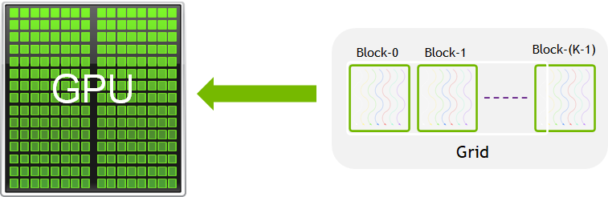
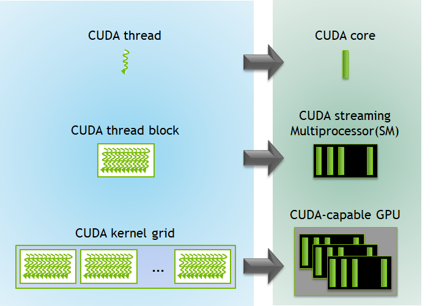
Figure Source:
Key Features
- Massive parallelism with thousands of concurrent threads
- Unified memory architecture for seamless CPU-GPU data access
- Built-in libraries for BLAS, FFT, random number generation, and more (e.g., cuBLAS, cuFFT, cuRAND)
- Tooling support including profilers, debuggers, and performance analyzers (e.g., Nsight, CUDA-GDB)
A CUDA program includes:
- Host code: Runs on the CPU, manages memory, and launches kernels.
- Device code (kernel): Runs on the GPU.
- Memory management: Host/device memory allocations and transfers.
To execute any CUDA program, there are three main steps:
- Copy the input data from host memory to device memory, also known as host-to-device transfer.
- Load the GPU program and execute, caching data on-chip for performance.
- Copy the results from device memory to host memory, also called device-to-host transfer.
Checking CUDA availability before running code
import cuda
if cuda.is_available():
print("CUDA is available!")
print(f"Detected GPU: {cuda.get_current_device().name}")
else:
print("CUDA is NOT available.")
High-Level Libraries for Portability
High-level libraries allow easier GPU programming in Python:
- Numba: JIT compiler for Python; supports GPU via
@cuda.jit - CuPy: NumPy-like API for NVIDIA GPUs
- Dask: Parallel computing with familiar APIs
Example: Add vectors utlising CUDA using the numba python library
from numba_cuda import cuda
import numpy as np
import time
@cuda.jit
def add_vectors(a, b, c):
i = cuda.grid(1)
if i < a.size:
c[i] = a[i] + b[i]
# Setup input arrays
N = 1_000_000
a = np.arange(N, dtype=np.float32)
b = np.arange(N, dtype=np.float32)
c = np.zeros_like(a)
# Copy arrays to device
d_a = cuda.to_device(a)
d_b = cuda.to_device(b)
d_c = cuda.device_array_like(a)
# Configure the kernel
threads_per_block = 256
blocks_per_grid = (N + threads_per_block - 1) // threads_per_block
# Launch the kernel
start = time.time()
add_vectors[blocks_per_grid, threads_per_block](d_a, d_b, d_c)
cuda.synchronize() # Wait for GPU to finish
gpu_time = time.time() - start
# Copy result back to host
d_c.copy_to_host(out=c)
# Verify results
print("First 5 results:", c[:5])
print("Time taken on GPU:", gpu_time, "seconds")
Slurm Script to execute the code
The following script can be used to submit a GPU-accelerated Python job (numba_cuda_test.py) using Slurm:
#!/bin/bash
#SBATCH --job-name=Numba_Cuda
#SBATCH --output=Numba_Cuda_%j.out
#SBATCH --error=Numba_Cuda_%j.err
#SBATCH --partition=gpu
#SBATCH --nodes=1
#SBATCH --ntasks-per-node=1
#SBATCH --cpus-per-task=4
#SBATCH --mem=16G
#SBATCH --gpus-per-node=1
#SBATCH --time=00:10:00
# --------- Load Environment ---------
module load Python/3.9.1
module load cuda/11.2
module list
# --------- Check whether the GPU is available ---------
from numba import cuda
print("CUDA Available:", cuda.is_available())
# Activate virtual environment
source 'name_of_venv'/bin/activate # Here name_of_venv refers to the name of your virtual environment without the quotes
# --------- Run the Python Script ---------
python numba_cuda_test.py
Make sure your virtual environment includes the numba-cuda python library to access the GPU.
Exercise:
Write a Numba or CuPy version of vector addition and compare speed with NumPy.
References:
CPU vs GPU Architecture
- CPUs: Few powerful cores, better for sequential tasks.
- GPUs: Many lightweight cores, ideal for parallel workloads.
Figure Suggestion:
Diagram comparing CPU vs GPU architecture, e.g., from CUDA C Programming Guide
Comparing CPU and GPU Approaches
| Feature | CPU (OpenMP/MPI) | GPU (CUDA) |
|---|---|---|
| Cores | Few (2–64) | Thousands (1024–10000+) |
| Memory | Shared / distributed | Device-local (needs transfer) |
| Programming | Easier to debug | Requires more setup |
| Performance | Good for logic-heavy tasks | Excellent for large, data-parallel problems |
Exercise:
Show which parts of the code execute on GPU vs CPU (host vs device). Read about concepts like memory copy and kernel launch.
Reference: NVIDIA CUDA Samples
Summary
- Serial code is simple but doesn’t scale well.
- Use OpenMP and MPI for parallelism on CPUs.
- Use CUDA (or high-level wrappers like Numba/CuPy) for GPU programming.
- Always profile your code to understand performance.
- Choose your tool based on problem size, complexity, and hardware.
Key Points
Serial code is limited to a single thread of execution, while parallel code uses multiple cores or nodes.
OpenMP and MPI are popular for parallel CPU programming; CUDA is used for GPU programming.
High-level libraries like Numba and CuPy make GPU acceleration accessible from Python.
Resource requirements
Overview
Teaching: 30 min
Exercises: 10 minQuestions
What is the difference between requesting for CPU and GPU resources using Slurm?
How can I optimize my slurm script to avail the best resources for my specific task?
Objectives
Understand different types of computational workloads and their resource requirements
Write optimized Slurm job scripts for sequential, parallel, and GPU workloads
Monitor and analyze resource utilization
Apply best practices for efficient resource allocation
Understanding Resource Requirements
Different computational tasks have varying resource requirements. Understanding these patterns is crucial for efficient HPC usage.
Types of Workloads
CPU-bound workloads: Tasks that primarily use computational power
- Mathematical calculations, simulations, data processing
- Benefit from more CPU cores and higher clock speeds
Memory-bound workloads: Tasks limited by memory access speed
- Large dataset processing, in-memory databases
- Require sufficient RAM and fast memory access
I/O-bound workloads: Tasks limited by disk or network operations
- File processing, database queries, data transfer
- Benefit from fast storage and network connections
GPU-accelerated workloads: Tasks that can utilize parallel processing
- Machine learning, scientific simulations, image processing
- Require appropriate GPU resources and memory
Types of Jobs and Resources
When you run work on an HPC cluster, your job’s type determines how it will be scheduled and what resources it will use. Broadly, jobs fall into three categories:
-
Serial jobs
These use a single CPU core (or sometimes a single thread) to run all calculations. They don’t require communication between multiple processes. They’re ideal for workloads like simple data analysis, single-threaded simulations, or testing code. -
Parallel jobs
These use multiple CPU cores — sometimes across multiple nodes — to run tasks simultaneously. Parallel jobs often use MPI (Message Passing Interface) or OpenMP explained in the previous section to coordinate work. They’re suited for large-scale simulations or computations that can be split into many parts running at once. -
GPU jobs
These use Graphics Processing Units to accelerate certain types of workloads, especially those involving heavy numerical computation like deep learning, image processing, or large matrix operations. GPU jobs often also use CPU cores for parts of the workflow.
Once you know your job type, you can select the correct SLURM partition (queue) and request the right resources:
| Job Type | SLURM Partition | Key SLURM Options | Example Use Case |
|---|---|---|---|
| Serial | serial |
--partition, no MPI |
Single-thread tensor calc |
| Parallel | defaultq |
-N, -n, mpirun |
MPI simulation |
| GPU | gpu |
--gpus, --cpus-per-task |
Deep learning training |
Choosing the Right Node
- Regular Node: For MPI-based distributed jobs or simple CPU tasks.
- SMP Node (Symmetric Multiprocessing): For jobs needing large shared memory (big matrices, in-memory data) or multi-threaded code (OpenMP, R, Python multiprocessing).
- In an SMP system, multiple CPUs (cores) share the same physical memory and can access it at the same speed. This architecture is ideal when tasks need frequent access to a common memory space without the communication overhead of distributed systems.
- GPU Node: For massively parallel computations on GPUs (e.g., CUDA, TensorFlow, PyTorch).
Decision chart for Choosing Nodes:
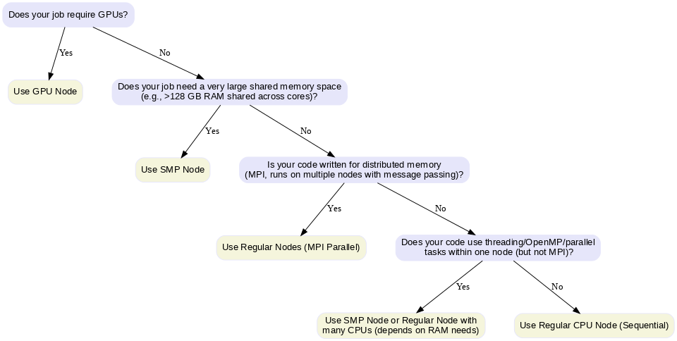
Key Points
Different computational models (sequential, parallel, GPU) significantly impact runtime and efficiency.
Sequential CPU execution is simple but inefficient for large parameter spaces.
Parallel CPU (e.g., MPI or OpenMP) reduces runtime by distributing tasks but is limited by CPU core counts and communication overhead.
GPU computing can drastically accelerate tasks with massively parallel workloads like grid-based simulations.
Choosing the right computational model depends on the problem structure, resource availability, and cost-efficiency.
Effective Slurm job scripts should match the workload to the hardware: CPUs for serial/parallel, GPUs for highly parallelizable tasks.
Monitoring tools (like
nvidia-smi,seff,top) help validate whether the resource request matches the actual usage.Optimizing resource usage minimizes wait times in shared environments and improves overall throughput.
Resource optimization
Overview
Teaching: 30 min
Exercises: 10 minQuestions
Example
For understanding how we can utilise different resources available on the HPC for the same computational task, we take the example of a python code which calculates the Gravitational Deflection Angle defined in the following way:
Deflection Angle Formula
For light passing near a massive object, the deflection angle (α) in the weak-field approximation is given by:
α = 4GM / (c²b)
Where:
- G = Gravitational constant (6.67430 × 10⁻¹¹ m³ kg⁻¹ s⁻²)
- M = Mass of the lensing object (in kilograms)
- c = Speed of light (299792458 m/s)
- b = Impact parameter (the closest approach distance of the light ray to the mass, in meters)
Computational Task Description
Compute the deflection angle over a grid of:
- Mass values: From 1 to 1000 solar masses (10³⁰ to 10³³ kg)
- Impact parameters: From 10⁹ to 10¹² meters
Generate a 2D array where each entry corresponds to the deflection angle for a specific pair of mass and impact parameter. Now we will look at how we will implement this for the different resources available on the HPC.
Sequential Job Optimization
Sequential jobs run on a single CPU core and are suitable for tasks that cannot be parallelized.
Sequential Job Script Explained
#!/bin/bash
#SBATCH -J jobname # Job name for identification
#SBATCH -o outfile.%J # Standard output file (%J = job ID)
#SBATCH -e errorfile.%J # Standard error file (%J = job ID)
#SBATCH --partition=serial # Use serial queue for single-core jobs
./[programme executable name] # Execute your program
Script breakdown:
#!/bin/bash: Specifies bash shell for script execution#SBATCH -J jobname: Sets a descriptive job name for easy identification in queue#SBATCH -o outfile.%J: Redirects standard output to a file with job ID#SBATCH -e errorfile.%J: Redirects error messages to separate file#SBATCH --partition=serial: Specifies the queue/partition for sequential jobs
Example: Gravitational Deflection Angle Sequential CPU
import numpy as np
import time
import matplotlib.pyplot as plt
import os
import matplotlib.colors as colors
# Constants
G = 6.67430e-11
c = 299792458
M_sun = 1.98847e30
# Parameter grid
mass_grid = np.linspace(1, 1000, 10000) # Solar masses
impact_grid = np.linspace(1e9, 1e12, 10000) # meters
result = np.zeros((len(mass_grid), len(impact_grid)))
# Timing
start = time.time()
# Sequential computation
for i, M in enumerate(mass_grid):
for j, b in enumerate(impact_grid):
result[i, j] = (4 * G * M * M_sun) / (c**2 * b)
end = time.time()
print(f"CPU Sequential time: {end - start:.3f} seconds")
result = np.save("result_cpu.npy", result)
mass_grid = np.save("mass_grid_cpu.npy", mass_grid)
impact_grid = np.save("impact_grid_cpu.npy", impact_grid)
# Load data
result = np.load("result_cpu.npy")
mass_grid = np.load("mass_grid_cpu.npy")
impact_grid = np.load("impact_grid_cpu.npy")
# Create meshgrid
M, B = np.meshgrid(mass_grid / 1.989e30, impact_grid / 1e9, indexing='ij')
# Create output directory
os.makedirs("plots", exist_ok=True)
plt.figure(figsize=(8,6))
pcm = plt.pcolormesh(B, M, result,
norm=colors.LogNorm(vmin=result[result > 0].min(), vmax=result.max()),
shading='auto', cmap='plasma')
plt.colorbar(pcm, label='Deflection Angle (radians, log scale)')
plt.xlabel('Impact Parameter (Gm)')
plt.ylabel('Mass (Solar Masses)')
plt.title('Gravitational Deflection Angle - CPU')
plt.tight_layout()
plt.savefig("plots/deflection_angle_cpu.png", dpi=300)
plt.close()
print("CPU plot saved in 'plots/deflection_angle_cpu.png'")
Sequential Job Script for the Example
#!/bin/bash
#SBATCH --job-name=HPC_WS_SCPU # Provide a name for the job
#SBATCH --output=HPC_WS_SCPU_%j.out # Request the output file along with the job number
#SBATCH --error=HPC_WS_SCPU_%j.err # Request the error file along with the job number
#SBATCH --partition=serial
#SBATCH --nodes=1 # Request one CPU node
#SBATCH --ntasks=1 # Request 1 core from the CPU node
#SBATCH --time=-01:00:00 # Set time limit for the job
#SBATCH --mem=16G #Request 16GB memory
# Load required modules
module purge # Remove the list of pre loaded modules
module load Python/3.9.1
module list
# Create a python virtual environment
python3 -m venv name_of_your_venv
# Activate your Python environment
source name_of_your_venv/bin/activate
echo "Starting Gravitational Lensing Deflection calculation of Sequential CPU..."
echo "Job ID: $SLURM_JOB_ID"
echo "Node: $SLURM_NODELIST"
# Run the Python script (with logging)
python Gravitational_Deflection_Angle_SCPU.py
echo "Job completed at $(date)"
Exercise: Profile Your Code
Compile and run the sequential code. Use
htopto monitor resource usage. Identify whether it’s CPU-bound or memory-bound
Parallel Job Optimization
Parallel jobs can utilize multiple CPU cores across one or more nodes to accelerate computation.
Parallel Job Script Explained
#!/bin/bash
#SBATCH -J jobname # Job name
#SBATCH -o outfile.%J # Output file
#SBATCH -e errorfile.%J # Error file
#SBATCH --partition=defaultq # Parallel job queue
#SBATCH -N 2 # Number of compute nodes
#SBATCH -n 24 # Total number of CPU cores per node
mpirun -np 48 ./mpi_program # Run with 48 MPI processes (2 nodes × 24 cores)
Changes from the sequential script:
#SBATCH --partition=defaultq: Sets to the default partition#SBATCH -N 2: Requests 2 compute nodes#SBATCH -n 24: Specifies 24 CPU cores per nodempirun -np 48: Launches 48 MPI processes total (2 × 24)
Example: Gravitational Deflection Angle Parallel CPU
from mpi4py import MPI
import numpy as np
import time
import os
import matplotlib.pyplot as plt
import matplotlib.colors as colors
# MPI setup
comm = MPI.COMM_WORLD
rank = comm.Get_rank()
size = comm.Get_size()
# Constants
G = 6.67430e-11
c = 299792458
M_sun = 1.98847e30
# Parameter grid (same on all ranks)
mass_grid = np.linspace(1, 1000, 10000) # Solar masses
impact_grid = np.linspace(1e9, 1e12, 10000) # meters
# Distribute mass grid among ranks
chunk_size = len(mass_grid) // size
start_idx = rank * chunk_size
end_idx = (rank + 1) * chunk_size if rank != size - 1 else len(mass_grid)
local_mass = mass_grid[start_idx:end_idx]
local_result = np.zeros((len(local_mass), len(impact_grid)))
# Timing
local_start = time.time()
# Compute local chunk
for i, M in enumerate(local_mass):
for j, b in enumerate(impact_grid):
local_result[i, j] = (4 * G * M * M_sun) / (c**2 * b)
local_end = time.time()
print(f"Rank {rank} local time: {local_end - local_start:.3f} seconds")
# Gather results
result = None
if rank == 0:
result = np.zeros((len(mass_grid), len(impact_grid)))
comm.Gather(local_result, result, root=0)
if rank == 0:
total_time = local_end - local_start
print(f"MPI total time (wall time): {total_time:.3f} seconds")
result = np.save("result_mpi.npy", result)
mass_grid = np.save("mass_grid_mpi.npy", mass_grid)
impact_grid = np.save("impact_grid_mpi.npy", impact_grid)
# Load data
result = np.load("result_mpi.npy")
mass_grid = np.load("mass_grid_mpi.npy")
impact_grid = np.load("impact_grid_mpi.npy")
# Create meshgrid
M, B = np.meshgrid(mass_grid / 1.989e30, impact_grid / 1e9, indexing='ij')
# Create output directory
os.makedirs("plots", exist_ok=True)
plt.figure(figsize=(8,6))
pcm = plt.pcolormesh(B, M, result,
norm=colors.LogNorm(vmin=result[result > 0].min(), vmax=result.max()),
shading='auto', cmap='plasma')
plt.colorbar(pcm, label='Deflection Angle (radians, log scale)')
plt.xlabel('Impact Parameter (Gm)')
plt.ylabel('Mass (Solar Masses)')
plt.title('Gravitational Deflection Angle - MPI')
plt.tight_layout()
plt.savefig("plots/deflection_angle_mpi.png", dpi=300)
plt.close()
print("MPI plot saved in 'plots/deflection_angle_mpi.png'")
Parallel Job Script for the Example
#!/bin/bash
#SBATCH --job-name=HPC_WS_PCPU # Provide a name for the job
#SBATCH --output=HPC_WS_PCPU_%j.out # Request the output file along with the job number
#SBATCH --error=HPC_WS_PCPU_%j.err # Request the error file along with the job number
#SBATCH --partition=defaultq
#SBATCH --nodes=2 # Request two CPU nodes
#SBATCH --ntasks=4 # Request 2 cores from each CPU node
#SBATCH --time=-01:00:00 # Set time limit for the job
#SBATCH --mem=16G #Request 16GB memory
# Load required modules
module purge # Remove the list of pre loaded modules
module load Python/3.9.1
module load openmpi4/default
module list # List the modules
# Create a python virtual environment
python3 -m venv name_of_your_venv
# Activate your Python virtual environment
source name_of_your_venv/bin/activate
echo "Starting Gravitational Lensing Deflection calculation of Sequential CPU..."
echo "Job ID: $SLURM_JOB_ID"
echo "Node: $SLURM_NODELIST"
# Run the Python script with MPI (with logging)
mpirun -np 4 python Gravitational_Lensing_PCPU.py
echo "Job completed at $(date)"
Exercise: Optimize Parallel Performance
Compile the OpenMP version with different thread counts. Submit jobs with varying
--cpus-per-taskvalues. Plot performance vs. thread count
GPU Job Optimization
GPU jobs leverage graphics processing units for massively parallel computations.
GPU Job Script Explained
#!/bin/bash
#SBATCH --nodes=1 # Single node (GPUs are node-local)
#SBATCH --ntasks-per-node=1 # One task per node
#SBATCH --cpus-per-task=4 # CPU cores to support GPU
#SBATCH -o output-%J.out # Output file with job ID
#SBATCH -e error-%J.err # Error file with job ID
#SBATCH --partition=gpu # GPU-enabled partition
#SBATCH --mem 32G # Memory allocation
#SBATCH --gpus-per-node=1 # Number of GPUs requested
./[programme executable name] # GPU program execution
GPU-specific parameters:
--partition=gpu: Specifies GPU-enabled compute nodes--gpus-per-node=1: Requests one GPU per node--mem 32G: Allocates sufficient memory for GPU operations--cpus-per-task=4: Provides CPU cores to feed data to GPU
Example: CUDA Implementation
import numpy as np
from numba import cuda
import time
import matplotlib.pyplot as plt
import os
import matplotlib.colors as colors
# Constants
G = 6.67430e-11
c = 299792458
# Parameter grid
mass_grid = np.linspace(1e30, 1e33, 10000)
impact_grid = np.linspace(1e9, 1e12, 10000)
mass_grid_device = cuda.to_device(mass_grid)
impact_grid_device = cuda.to_device(impact_grid)
result_device = cuda.device_array((len(mass_grid), len(impact_grid)))
# CUDA kernel
@cuda.jit
def compute_deflection(mass_array, impact_array, result):
i, j = cuda.grid(2)
if i < mass_array.size and j < impact_array.size:
M = mass_array[i]
b = impact_array[j]
result[i, j] = (4 * G * M) / (c**2 * b)
# Setup thread/block dimensions
threadsperblock = (16, 16)
blockspergrid_x = (mass_grid.size + threadsperblock[0] - 1) // threadsperblock[0]
blockspergrid_y = (impact_grid.size + threadsperblock[1] - 1) // threadsperblock[1]
blockspergrid = (blockspergrid_x, blockspergrid_y)
# Run the kernel
start = time.time()
compute_deflection[blockspergrid, threadsperblock](mass_grid_device, impact_grid_device, result_device)
cuda.synchronize()
end = time.time()
result = result_device.copy_to_host()
print(f"CUDA time: {end - start:.3f} seconds")
# Save the result and grids
np.save("result_cuda.npy", result)
np.save("mass_grid_cuda.npy", mass_grid)
np.save("impact_grid_cuda.npy", impact_grid)
print("Result and grids saved as .npy files.")
# Load data
result = np.load("result_cuda.npy")
mass_grid = np.load("mass_grid_cuda.npy")
impact_grid = np.load("impact_grid_cuda.npy")
# Create meshgrid
M, B = np.meshgrid(mass_grid / 1.989e30, impact_grid / 1e9, indexing='ij')
# Create output directory
os.makedirs("plots", exist_ok=True)
plt.figure(figsize=(8,6))
pcm = plt.pcolormesh(B, M, result,
norm=colors.LogNorm(vmin=result[result > 0].min(), vmax=result.max()),
shading='auto', cmap='plasma')
plt.colorbar(pcm, label='Deflection Angle (radians, log scale)')
plt.xlabel('Impact Parameter (Gm)')
plt.ylabel('Mass (Solar Masses)')
plt.title('Gravitational Deflection Angle - CUDA')
plt.tight_layout()
plt.savefig("plots/deflection_angle_cuda.png", dpi=300)
plt.close()
print("CUDA plot saved in 'plots/deflection_angle_cuda.png'")
GPU Job Script for the Example
#!/bin/bash
#SBATCH --job-name=HPC_WS_GPU # Provide a name for the job
#SBATCH --output=HPC_WS_GPU_%j.out
#SBATCH --error=HPC_WS_GPU_%j.err
#SBATCH --partition=gpu
#SBATCH --nodes=1
#SBATCH --ntasks-per-node=1
#SBATCH --cpus-per-task=4 # Number of CPUs for data preparation
#SBATCH --mem=32G # Memmory allocation
#SBATCH --gpus-per-node=1
#SBATCH --time=06:00:00
# --------- Load Environment ---------
module load Python/3.9.1
module load cuda/11.2
module list
# Activate your Python virtual environment
source name_of_your_venv/bin/activate
# --------- Run the Python Script ---------
python Gravitational_Lensing_GPU.py
Exercise: GPU vs CPU Comparison
Run the tensor operations script on both CPU and GPU. Compare execution times and memory usage. Calculate the speedup factor
Key Points
Performance analysis tools
Overview
Teaching: 30 min
Exercises: 10 minQuestions
Resource Monitoring and Performance Analysis
Monitoring Job Performance
#!/bin/bash
#SBATCH --partition=gpu
#SBATCH --gpus=1
#SBATCH --job-name=ResourceMonitor
#SBATCH --output=ResourceMonitor_%j.out
#SBATCH --time=00:10:00 # 10 minutes max (5 for monitoring + buffer)
# --------- Configuration ---------
LOG_FILE="resource_monitor.log"
INTERVAL=30 # Interval between logs in seconds
DURATION=60 # Total duration in seconds (5 minutes)
ITERATIONS=$((DURATION / INTERVAL))
# --------- Start Monitoring ---------
echo "Starting Resource Monitoring for $DURATION seconds (~$((DURATION/60)) minutes)..."
echo "Logging to: $LOG_FILE"
echo "------ Monitoring Started at $(date) ------" >> "$LOG_FILE"
# --------- System Info Check ---------
echo "==== System Info Check ====" | tee -a "$LOG_FILE"
echo "Hostname: $(hostname)" | tee -a "$LOG_FILE"
# Check NVIDIA driver and GPU presence
if command -v nvidia-smi &> /dev/null; then
echo "✅ nvidia-smi is available." | tee -a "$LOG_FILE"
if nvidia-smi &>> "$LOG_FILE"; then
echo "✅ GPU detected and driver is working." | tee -a "$LOG_FILE"
else
echo "⚠️ NVIDIA-SMI failed. Check GPU node or driver issues." | tee -a "$LOG_FILE"
fi
else
echo "❌ nvidia-smi is not installed." | tee -a "$LOG_FILE"
fi
echo "Checking for NVIDIA GPU presence on PCI bus..." | tee -a "$LOG_FILE"
if lspci | grep -i nvidia &>> "$LOG_FILE"; then
echo "✅ NVIDIA GPU found on PCI bus." | tee -a "$LOG_FILE"
else
echo "❌ No NVIDIA GPU detected on this node." | tee -a "$LOG_FILE"
fi
echo "" | tee -a "$LOG_FILE"
# --------- Trap CTRL+C for Clean Exit ---------
trap "echo 'Stopping monitoring...'; echo '------ Monitoring Ended at $(date) ------' >> \"$LOG_FILE\"; exit" SIGINT SIGTERM
# --------- Monitoring Loop ---------
for ((i=1; i<=ITERATIONS; i++)); do
echo "========================== $(date) ==========================" >> "$LOG_FILE"
# GPU usage monitoring
echo "--- GPU Usage (nvidia-smi) ---" >> "$LOG_FILE"
nvidia-smi 2>&1 | grep -v "libnvidia-ml.so" >> "$LOG_FILE"
echo "" >> "$LOG_FILE"
# CPU and Memory monitoring
echo "--- CPU and Memory Usage (top) ---" >> "$LOG_FILE"
top -b -n 1 | head -20 >> "$LOG_FILE"
echo "" >> "$LOG_FILE"
sleep $INTERVAL
done
echo "------ Monitoring Ended at $(date) ------" >> "$LOG_FILE"
echo "✅ Resource monitoring completed."
Understanding Outputs - top - CPU and Memory Monitoring
Example Output:
--- CPU and Memory Usage (top) ---
top - 17:53:49 up 175 days, 9:41, 0 users, load average: 1.01, 1.06, 1.08
Tasks: 765 total, 1 running, 764 sleeping, 0 stopped, 0 zombie
%Cpu(s): 2.2 us, 0.1 sy, 0.0 ni, 97.7 id, 0.0 wa, 0.0 hi, 0.0 si, 0.0 st
MiB Mem : 515188.2 total, 482815.2 free, 17501.5 used, 14871.5 buff/cache
MiB Swap: 4096.0 total, 4072.2 free, 23.8 used. 493261.3 avail Mem
Explanation:
Header Line - System Uptime and Load Average
top - 17:53:49 up 175 days, 9:41, 0 users, load average: 1.01, 1.06, 1.08
- 17:53:49 - Current time.
- up 175 days, 9:41 - How long the system has been running.
- 0 users - Number of users logged in.
-
load average - System load over 1, 5, and 15 minutes.
- A load of 1.00 means one CPU core is fully utilized.
Task Summary
Tasks: 765 total, 1 running, 764 sleeping, 0 stopped, 0 zombie
- 765 total - Total processes.
- 1 running - Actively running.
- 764 sleeping - Waiting for input or tasks.
- 0 stopped - Stopped processes.
- 0 zombie - Zombie processes (defunct).
CPU Usage
%Cpu(s): 2.2 us, 0.1 sy, 0.0 ni, 97.7 id, 0.0 wa, 0.0 hi, 0.0 si, 0.0 st
| Field | Meaning |
|---|---|
| us | User CPU time - 2.2% |
| sy | System (kernel) time - 0.1% |
| ni | Nice (priority) - 0.0% |
| id | Idle - 97.7% |
| wa | Waiting for I/O - 0.0% |
| hi | Hardware interrupts - 0.0% |
| si | Software interrupts - 0.0% |
| st | Steal time (virtualization) - 0.0% |
Memory Usage
MiB Mem : 515188.2 total, 482815.2 free, 17501.5 used, 14871.5 buff/cache
| Field | Meaning |
|---|---|
| total | Total RAM (515188.2 MiB) |
| free | Free RAM (482815.2 MiB) |
| used | Used by programs (17501.5 MiB) |
| buff/cache | Disk cache and buffers (14871.5 MiB) |
Swap Usage
MiB Swap: 4096.0 total, 4072.2 free, 23.8 used. 493261.3 avail Mem
| Field | Meaning |
|---|---|
| total | Swap space available (4096 MiB) |
| free | Free swap (4072.2 MiB) |
| used | Swap used (23.8 MiB) |
| avail Mem | Available memory for new tasks (493261.3 MiB) |
- These explanations cover the descriptions of each of the different parameters given by the
topoutput.
Performance Comparison Script
import matplotlib.pyplot as plt
# Extracted timings from the printed output
methods = ['Sequential (CPU)', 'MPI (PCPU)', 'CUDA (GPU)']
times = [70.430, 13.507, 0.341] # Replace the times with the times printed by running the above scripts
plt.figure(figsize=(10, 6))
bars = plt.bar(methods, times, color=['blue', 'green', 'red'])
plt.ylabel('Execution Time (seconds)')
plt.title('Performance Comparison: CPU vs MPI vs GPU')
# Add labels above bars
for bar, time in zip(bars, times):
plt.text(bar.get_x() + bar.get_width() / 2, bar.get_height() + 1,
f'{time:.3f}s', ha='center', va='bottom')
plt.tight_layout()
plt.savefig('performance_comparison.png', dpi=300, bbox_inches='tight')
plt.show()
Exercise: Resource Efficiency Analysis
Run the above python script to create a comparitive analysis between the different methods you used in this tutorial to understand the efficiency of different resources
Example Solution
This plot shows the execution time comparison between CPU, MPI, and GPU implementations.

Best Practices and Common Pitfalls
Resource Allocation Best Practices
- Match resources to workload requirements
- Don’t request more resources than you can use
- Consider memory requirements carefully
- Use appropriate partitions/queues
- Test with small jobs first
- Validate your scripts with shorter runs
- Check resource utilization before scaling up
- Monitor and optimize
- Use profiling tools to identify bottlenecks
- Adjust resource requests based on actual usage
Common Mistakes to Avoid
- Over-requesting resources
# Bad: Requesting 32 cores for sequential code #SBATCH --cpus-per-task=32 ./sequential_program # Good: Match core count to parallelization #SBATCH --cpus-per-task=1 ./sequential_program - Memory allocation errors
# Bad: Not specifying memory for memory-intensive jobs #SBATCH --partition=defaultq # Good: Specify adequate memory #SBATCH --partition=defaultq #SBATCH --mem=16G - GPU job inefficiencies
# Bad: Too many CPU cores for GPU job #SBATCH --cpus-per-task=32 #SBATCH --gpus-per-node=1 # Good: Balanced CPU-GPU ratio #SBATCH --cpus-per-task=4 #SBATCH --gpus-per-node=1
Summary
Resource optimization in HPC involves understanding your workload characteristics and matching them with appropriate resource allocations. Key takeaways:
- Profile your code to understand resource requirements
- Use sequential jobs for single-threaded applications
- Leverage parallel computing for scalable workloads
- Utilize GPUs for massively parallel computations
- Monitor performance and adjust allocations accordingly
- Avoid common pitfalls like over-requesting resources
Efficient resource utilization not only improves your job performance but also ensures fair access to shared HPC resources for all users.
Revisit Earlier Exercises
Now that you’ve learned how to submit jobs using Slurm and request computational resources effectively, revisit the following exercises from the earlier lesson:
Try running them now on your cluster using the appropriate Slurm script and resource flags.
Solution 1: Slurm Submission Script for Exercise MPI with
mpi4pyThe following script can be used to submit your MPI-based Python program (
mpi_hpc_ws.py) on an HPC cluster using Slurm:#!/bin/bash #SBATCH --job-name=mpi_hpc_ws #SBATCH --output=mpi_%j.out #SBATCH --error=mpi_%j.err #SBATCH --partition=defaultq #SBATCH --nodes=2 #SBATCH --ntasks=4 #SBATCH --time=00:10:00 #SBATCH --mem=16G # Load required modules module purge module load Python/3.9.1 module list Create a python virtual environment python3 -m venv name_of_your_venv Activate your Python environment source name_of_your_venv/bin/activate # Run the MPI job mpirun -np 4 python mpi_hpc_ws.pyMake sure your virtual environment has
mpi4pyinstalled and that your system has access to the OpenMPI runtime viampirun. Adjust the number of nodes and tasks depending on the cluster policies.
Solution 2: Slurm Submission Script for Exercise GPU with
numba-cudaThe following script can be used to submit a GPU-accelerated Python job (
numba_cuda_test.py) using Slurm:#!/bin/bash #SBATCH --job-name=Numba_Cuda #SBATCH --output=Numba_Cuda_%j.out #SBATCH --error=Numba_Cuda_%j.err #SBATCH --partition=gpu #SBATCH --nodes=1 #SBATCH --ntasks-per-node=1 #SBATCH --cpus-per-task=4 #SBATCH --mem=16G #SBATCH --gpus-per-node=1 #SBATCH --time=00:10:00 # --------- Load Environment --------- module load Python/3.9.1 module load cuda/11.2 module list # --------- Check whether the GPU is available --------- from numba import cuda print("CUDA Available:", cuda.is_available()) # Activate virtual environment source 'name_of_venv'/bin/activate # Here name_of_venv refers to the name of your virtual environment without the quotes # --------- Run the Python Script --------- python numba_cuda_test.pyMake sure your virtual environment includes the
numba-cudapython library to access the GPU.
Key Points
Wrap-up
Overview
Teaching: 15 min
Exercises: 0 minQuestions
Looking back at what was covered and how different pieces fit together
Where are some advanced topics and further reading available?
Objectives
Put the course in context with future learning.
Summary
Further Resources
Below are some additional resources to help you continue learning:
- A comprehensive HPC manual
- Carpentries HPC workshop Using Python in an HPC environment course
- Foundations of Astronomical Data Science Carpentries Workshop
- A previous InterPython workshop materials, covering collaborative usage of GitHub, Programming Paradigms, Software Architecture and many more
- CodeRefinery courses on FAIR (Findable, Accessible, Interoperable, and Reusable) software practices
- Python documentation
- GitHub Actions documentation
Key Points
Keypoint 1
Command line interface (CLI)
Overview
Teaching: min
Exercises: minQuestions
Objectives
Learn how to navigate around directories and look at their contents
Explain the difference between a file and a directory.
Translate an absolute path into a relative path and vice versa.
Identify the actual command, flags, and filenames in a command-line call.
Demonstrate the use of tab completion, and explain its advantages.
The Command-line Interface (CLI) is a text-based interface for interacting directly with the operating system by executing commands. This contrasts with the Graphical User Interface (GUI) you might be familiar with, where instructions are sent to the computer via a point-and-click mechanism. The most common shells are Bash and Zsh, typically used in Unix-based operating systems.
Shell scripting can be very useful in science, including:
- Reproducibility – Shell scripts can be saved and re-executed at a later date. Commands executed in the shell are also saved and can be referred to later.
- Throughput – Many tasks in science are repetitive. For example, if we were conducting a calculation on 100 samples and wanted to do some simple statistics on reads, we could use loops to perform this task on all sets of reads. This is much quicker than using a GUI.
- Integration – Shell scripting allows you to integrate several programs into workflows.
- Efficiency – GUIs can be resource-intensive. Using the shell frees resources that would otherwise be used for the GUI.
At this point in the lesson, we’ve just logged into the system. Nothing has happened yet, and we’re not going to be able to do anything until we learn a few basic commands. By the end of this lesson, you will know how to “move around” the system and look at what’s there.
When you log in to an HPC system or Linux-based server, you’ll be greeted by a prompt like:
The dollar sign ($) is called the prompt, which shows that the shell is waiting for input. Your prompt may look slightly different depending on the system configuration. Always type only the commands after the prompt — do not include the $ when copying and pasting.
Let’s start by checking who we are on this system:
$ whoami
yourUsername
The shell has now:
- Found a program named
whoami - Executed it
- Printed the result
- Returned to a new prompt, ready for more input
Absolute and Relative Paths
Absolute path: begins at the root directory / and specifies the full location of a file or directory. It does not depend on the current working directory and always starts with /.
Example:
/home/angel/lsst2025
Relative path: begins at the current working directory and specifies the path from there to the target file or directory. It does not start with /.
Example: If I am currently in my home directory /home/angel:
lsst2025/week_1
is the relative path to /home/angel/lsst2025/week_1.
When things go wrong: The most common navigation error occurs when the path to a file is set incorrectly. You’ll see:
No such file or directory
If this happens, double-check the accuracy of the path.
Three key navigation commands
pwd– Print Working Directory (tells you where you are)cd– Change Directoryls– List directory contents
Exercise 1:
Use the pwd command to print your current working directory to the terminal. Is the path absolute or relative? How can you tell?
Example:
$ pwd
/home/yourUsername
To list the contents of your directory:
$ ls
Differences between remote and local systems
Try opening a terminal on your local computer (not connected via SSH) and run
ls. Compare the output to what you see on the HPC system.Solution
On a local machine you might see:
Desktop Documents Downloads Music Pictures PublicOn a remote system the contents differ, and the prompt may also look different.
If ls shows nothing, the folder is empty. Let’s create one:
$ mkdir documents
$ ls
Change into it:
$ cd documents
$ pwd
/home/yourUsername/documents
Shortcuts
~ is your home directory:
cd ~
You can always get back to your home directory using:
cd
cd ~
cd /home/yourUsername
Understanding the UNIX Filesystem
All files and directories exist within a hierarchy starting at /, the root directory.
Example:
$ cd /
$ ls
$ cd ~
Typical output:
bin boot dev etc home lib media mnt opt proc root run sbin srv tmp usr var
Most of the time, you’ll be working within:
/home/yourUsername— your home space/scratch/yourUsername— temporary, high-speed space/work/yourProject— shared project space
HPC-Specific Filesystem Areas
- Home:
/home/yourUsername– persistent, backed up, limited in size - Scratch:
/scratch/yourUsername– temporary, fast storage (purged periodically) - Work:
/work/yourProject– shared space, often larger and not backed up - Apps:
/apps/– software modules
Always check local documentation for storage policies.
Special Directory Symbols
.— current directory..— parent directory~— home directory
Example:
$ cd ./documents
$ pwd
$ cd ..
$ pwd
Flags and Options
Commands can take options (flags). With ls:
-a: show hidden files-l: long listing format-h: human-readable sizes
Examples:
$ ls -a
$ ls -l
$ ls -lh
$ ls -l -a ~/documents
You can combine options:
ls -lah
Getting Help
Use:
man ls
(Press q to quit)
or:
ls --help
If you use an invalid option:
$ ls -j
ls: invalid option -- 'j'
Try 'ls --help' for more information.
Writing and Reading Files
Move back to your home directory and create a scratch directory:
$ cd ~
$ mkdir hpc-test
$ cd hpc-test
Creating and Editing Text Files
Use nano:
$ nano draft.txt
Ctrl + O— SaveCtrl + X— ExitCtrl + K— Cut lineCtrl + U— Paste line
Check the file:
$ ls
draft.txt
Reading Files
$ cat draft.txt
Multiple files:
$ cat draft.txt draft.txt
Creating Directories
$ mkdir files
$ ls
draft.txt files
Moving, Renaming, Copying
Move:
$ mv draft.txt files
$ cd files
$ ls
draft.txt
Rename:
$ mv draft.txt notes_v1.txt
Copy:
$ cp notes_v1.txt backup.txt
$ cp notes_v1.txt ..
Deleting Files and Directories
Delete a file:
$ rm notes_v1.txt
Delete a directory:
$ rm -r files
Caution: rm -rf deletes everything recursively without asking.
Viewing Large Files
head file.txt– top 10 linestail file.txt– last 10 linesless file.txt– scrollable (pressqto quit)
Downloading and Extracting Files
Download:
$ wget https://example.com/sample.tar.gz
or:
$ curl -O https://example.com/sample.tar.gz
Extract:
$ tar -xvf sample.tar.gz
Cheatsheet:
.gz:gunzip file.gz.zip:unzip file.zip.tar.gz/.tar.bz2:tar -xvf file.tar.gz
Summary
- Use
pwd,ls,cdto navigate - Understand absolute and relative paths
- Use
nanoto create/edit files - Use
mkdir,mv,cp,rmto manage files - View files with
cat,head,tail,less - Download and extract with
wget,curl,tar
The Famous Warning About rm -f
The rm command permanently deletes files and directories — there is no “undo” button in the command-line interface.
One of the most famous cautionary tales in Unix history involves the command:
rm -rf /
This command tells the system to:
rm: remove files-r: recursively descend into directories-f: force deletion without prompting
Running rm -rf / as a superuser (root) would attempt to delete the entire filesystem, including system files, configuration files, and user data. On older Unix systems, this could completely wipe the machine in seconds. Modern Linux systems protect / by default, but variations of this command can still cause catastrophic, irreversible data loss.
Golden Rules:
- Always double-check the path you’re passing to
rm. - Use
lsfirst to verify which files you are about to delete. - When in doubt, remove interactively with:
rm -i file.txt - Avoid running
rm -rfasrootunless absolutely necessary.
As Unix users say:
“With great power comes great responsibility — and
rm -rfis the nuclear option.”
Real-World Example: rm -rf Disaster
The warnings about rm -rf are not just theory — they have caused real and costly disasters.
**1. Story **
A developer intended to delete a temporary directory with:
rm -rf / home/user/tmp
They accidentally typed a space after /, turning the command into:
rm -rf /
This began deleting everything on the server from the root directory. It resulted in total system loss and required full restoration from backups.
More https://www.linkedin.com/pulse/famous-rm-rf-story-bipin-patwardhan
2. GitLab 2017
There is an urban legend that a junior administrator was connected to the production server and ran a cleanup command:
rm -rf /var/lib/postgresql
They believed they were on a staging environment. This command wiped 300 GB of live production databases in seconds. GitLab’s public postmortem documented the long recovery process from incomplete backups. https://www.bleepingcomputer.com/news/hardware/gitlab-goes-down-after-employee-deletes-the-wrong-folder/
These examples underscore that rm -rf is a power tool that can cause irreversible destruction. Always triple-check the path, and consider safer alternatives like:
rm -ri path/
or moving files to a “trash” directory before permanent deletion.
Key Points
Your current directory is referred to as the working directory.
To change directories, use
cd.To view files, use
ls.You can view help for a command with
man commandorcommand --help.Hit
tabto autocomplete whatever you’re currently typing.